Neocaridina davidi var. Red
sp_0001边距 69px
69,69,436,196
主体完整度 0.9961
/species-transparent/morph_batch_017_sheet_02_极火虾_Neocaridina_davidi_var._Red.png?v=cutfix4_20260510
Caridina cantonensis var.
sp_0002边距 71px
71,71,446,144
主体完整度 0.9979
/species-transparent/morph_batch_012_sheet_04_水晶虾_Caridina_cantonensis_var.png?v=cutfix4_20260510
Caridina dennerli
sp_0003边距 68px
68,68,425,187
主体完整度 0.9887
/species-transparent/base_missing_002_sheet_01_苏拉威西虾_Caridina_dennerli.png?v=cutfix4_20260510
Vittina turrita
sp_0004边距 64px
64,64,393,263
主体完整度 1.0000
/species-transparent/base_missing_007_sheet_03_洋葱螺_Vittina_turrita.png?v=cutfix4_20260510
Clithon corona
sp_0005边距 64px
64,64,309,213
主体完整度 1.0000
/species-transparent/base_missing_002_sheet_06_角螺_Clithon_corona.png?v=cutfix4_20260510
Geosesarma dennerle
sp_0006边距 69px
69,69,436,180
主体完整度 0.9989
/species-transparent/base_missing_003_sheet_10_恶魔蟹_Geosesarma_dennerle.png?v=cutfix4_20260510
Ambystoma mexicanum
sp_0007边距 69px
69,69,434,210
主体完整度 0.9993
/species-transparent/base_missing_001_sheet_03_六角恐龙_Ambystoma_mexicanum.png?v=cutfix4_20260510
Cynops orientalis
sp_0008边距 73px
73,73,460,150
主体完整度 0.9999
/species-transparent/base_missing_002_sheet_10_东方蝾螈_Cynops_orientalis.png?v=cutfix4_20260510
Ceratophrys ornata
sp_0009边距 64px
64,64,346,213
主体完整度 0.9999
/species-transparent/base_missing_002_sheet_04_角蛙_Ceratophrys_ornata.png?v=cutfix4_20260510
Gymnocorymbus ternetzi
sp_0010边距 64px
64,64,354,219
主体完整度 0.9990
/species-transparent/batch_002_species_sheet_01_黑裙鱼_Gymnocorymbus_ternetzi.png?v=cutfix4_20260510
Xiphophorus maculatus
sp_0011边距 64px
64,64,389,200
主体完整度 1.0000
/species-transparent/batch_002_species_sheet_02_月光鱼_Xiphophorus_maculatus.png?v=cutfix4_20260510
Puntius titteya
sp_0012边距 64px
64,64,357,176
主体完整度 1.0000
/species-transparent/batch_002_species_sheet_05_樱桃灯_Puntius_titteya.png?v=cutfix4_20260510
Otocinclus vittatus
sp_0013边距 64px
64,64,383,155
主体完整度 0.9954
/species-transparent/batch_002_species_sheet_07_小精灵_Otocinclus_vittatus.png?v=cutfix4_20260510
Corydoras aeneus
sp_0014边距 64px
64,64,382,191
主体完整度 1.0000
/species-transparent/batch_002_species_sheet_08_咖啡鼠_Corydoras_aeneus.png?v=cutfix4_20260510
Helostoma temminkii
sp_0015边距 64px
64,64,401,198
主体完整度 1.0000
/species-transparent/batch_003_species_sheet_01_接吻鱼_Helostoma_temminkii.png?v=cutfix4_20260510
Mikrogeophagus ramirezi var. Gold
sp_0016边距 64px
64,64,363,211
主体完整度 1.0000
/species-transparent/morph_batch_016_sheet_04_金波子_Mikrogeophagus_ramirezi_var._Gold.png?v=cutfix4_20260510
Apistogramma agassizii
sp_0017边距 64px
64,64,395,188
主体完整度 1.0000
/species-transparent/batch_003_species_sheet_04_阿卡西短鲷_Apistogramma_agassizii.png?v=cutfix4_20260510
Chindongo socolofi
sp_0018边距 65px
65,65,412,211
主体完整度 1.0000
/species-transparent/batch_003_species_sheet_05_蓝王子_Chindongo_socolofi.png?v=cutfix4_20260510
Pterophyllum altum
sp_0019边距 90px
90,90,502,300
主体完整度 0.8674
/species-display/sp_0019_埃及神仙_display_white.png?v=displayfix_20260510Phenacogrammus interruptus
sp_0020边距 81px
81,81,1432,637
主体完整度 0.9999
/species-transparent/刚果美人_Phenacogrammus_interruptus_transparent_v4.png?v=transparentfix_20260510
Amatitlania nigrofasciata var.
sp_0021边距 64px
64,64,401,220
主体完整度 1.0000
/species-transparent/morph_batch_011_sheet_02_迷你鹦鹉鱼_Amatitlania_nigrofasciata_var.png?v=cutfix4_20260510
Lutjanus kasmira
sp_0022边距 72px
72,72,453,219
主体完整度 1.0000
/species-transparent/batch_004_species_sheet_02_红利_Lutjanus_kasmira.png?v=cutfix4_20260510
Zebrasoma flavescens
sp_0023边距 64px
64,64,367,227
主体完整度 1.0000
/species-transparent/batch_004_species_sheet_04_黄倒吊_Zebrasoma_flavescens.png?v=cutfix4_20260510
Paracanthurus hepatus
sp_0024边距 64px
64,64,389,199
主体完整度 1.0000
/species-transparent/batch_004_species_sheet_05_蓝倒吊_Paracanthurus_hepatus.png?v=cutfix4_20260510
Pterapogon kauderni
sp_0025边距 64px
64,64,311,218
主体完整度 0.9732
/species-transparent/batch_004_species_sheet_06_泗水玫瑰_Pterapogon_kauderni.png?v=cutfix4_20260510
Hypostomus plecostomus
sp_0026边距 72px
72,72,450,218
主体完整度 1.0000
/species-transparent/batch_004_species_sheet_08_清道夫_Hypostomus_plecostomus.png?v=cutfix4_20260510Neocaridina davidi var. Red
sp_0027边距 69px
69,69,436,196
主体完整度 0.9961
/species-transparent/morph_batch_017_sheet_02_极火虾_Neocaridina_davidi_var._Red.png?v=cutfix4_20260510Caridina cantonensis var.
sp_0028边距 71px
71,71,446,144
主体完整度 0.9979
/species-transparent/morph_batch_012_sheet_04_水晶虾_Caridina_cantonensis_var.png?v=cutfix4_20260510Caridina dennerli
sp_0029边距 68px
68,68,425,187
主体完整度 0.9887
/species-transparent/base_missing_002_sheet_01_苏拉威西虾_Caridina_dennerli.png?v=cutfix4_20260510
Neocaridina davidi var. Yellow
sp_0030边距 71px
71,71,449,197
主体完整度 0.9954
/species-transparent/morph_batch_017_sheet_04_黄金米虾_Neocaridina_davidi_var._Yellow.png?v=cutfix4_20260510
Neocaridina davidi var. Blue
sp_0031边距 74px
74,74,465,196
主体完整度 0.9957
/species-transparent/morph_batch_017_sheet_05_蓝丝绒米虾_Neocaridina_davidi_var._Blue.png?v=cutfix4_20260510Vittina turrita
sp_0032边距 64px
64,64,393,263
主体完整度 1.0000
/species-transparent/base_missing_007_sheet_03_洋葱螺_Vittina_turrita.png?v=cutfix4_20260510Clithon corona
sp_0033边距 64px
64,64,309,213
主体完整度 1.0000
/species-transparent/base_missing_002_sheet_06_角螺_Clithon_corona.png?v=cutfix4_20260510
Tylomelania sp.
sp_0034边距 64px
64,64,365,176
主体完整度 1.0000
/species-transparent/morph_batch_028_sheet_04_兔螺_Tylomelania_sp.png?v=cutfix4_20260510Geosesarma dennerle
sp_0035边距 69px
69,69,436,180
主体完整度 0.9989
/species-transparent/base_missing_003_sheet_10_恶魔蟹_Geosesarma_dennerle.png?v=cutfix4_20260510
Neritina turrita var.
sp_0036边距 64px
64,64,229,189
主体完整度 1.0000
/species-transparent/morph_batch_018_sheet_07_豹点螺_Neritina_turrita_var.png?v=cutfix4_20260510
Acheilognathus macropterus
sp_0037边距 68px
68,68,430,185
主体完整度 1.0000
/species-transparent/batch_004_species_sheet_09_大鳍鱊_Acheilognathus_macropterus.png?v=cutfix4_20260510
Opsariichthys bidens
sp_0038边距 71px
71,71,444,181
主体完整度 1.0000
/species-transparent/batch_004_species_sheet_10_马口鱼_Opsariichthys_bidens.png?v=cutfix4_20260510
Pseudogastromyzon fangi
sp_0039边距 74px
74,74,464,141
主体完整度 1.0000
/species-transparent/batch_005_species_sheet_01_方氏拟腹吸鳅_Pseudogastromyzon_fangi.png?v=cutfix4_20260510
Cobitis sinensis
sp_0040边距 74px
74,74,466,131
主体完整度 0.9965
/species-transparent/batch_005_species_sheet_02_中华花鳅_Cobitis_sinensis.png?v=cutfix4_20260510
Abbottina rivularis
sp_0041边距 74px
74,74,467,148
主体完整度 1.0000
/species-transparent/batch_005_species_sheet_03_棒花鱼_Abbottina_rivularis.png?v=cutfix4_20260510
Pseudorasbora parva
sp_0042边距 74px
74,74,465,177
主体完整度 0.9952
/species-transparent/batch_005_species_sheet_04_麦穗鱼_Pseudorasbora_parva.png?v=cutfix4_20260510
Macropodus ocellatus
sp_0043边距 71px
71,71,447,195
主体完整度 1.0000
/species-transparent/batch_005_species_sheet_05_圆尾斗鱼_Macropodus_ocellatus.png?v=cutfix4_20260510
Macropodus spechti
sp_0044边距 75px
75,75,469,195
主体完整度 1.0000
/species-transparent/batch_005_species_sheet_06_黑叉尾斗鱼_Macropodus_spechti.png?v=cutfix4_20260510
Sewellia lineolata
sp_0045边距 74px
74,74,466,109
主体完整度 1.0000
/species-transparent/batch_005_species_sheet_07_越南爬岩鳅_Sewellia_lineolata.png?v=cutfix4_20260510
Aphyocypris chinensis
sp_0046边距 74px
74,74,467,176
主体完整度 0.9942
/species-transparent/batch_005_species_sheet_08_中华细鲫_Aphyocypris_chinensis.png?v=cutfix4_20260510
Pseudobagrus fulvidraco
sp_0047边距 75px
75,75,470,208
主体完整度 0.9995
/species-transparent/batch_005_species_sheet_09_长臀鮠_Pseudobagrus_fulvidraco.png?v=cutfix4_20260510
Mastacembelus armatus
sp_0048边距 76px
76,76,479,117
主体完整度 1.0000
/species-transparent/batch_005_species_sheet_10_大刺鳅_Mastacembelus_armatus.png?v=cutfix4_20260510
Channa asiatica
sp_0049边距 76px
76,76,478,116
主体完整度 1.0000
/species-transparent/batch_006_species_sheet_01_珍珠赤雷龙_Channa_asiatica.png?v=cutfix4_20260510
Channa barca
sp_0050边距 75px
75,75,472,141
主体完整度 1.0000
/species-transparent/batch_006_species_sheet_02_巴卡雷龙_Channa_barca.png?v=cutfix4_20260510
Acrossocheilus fasciatus
sp_0051边距 74px
74,74,467,155
主体完整度 0.9984
/species-transparent/batch_006_species_sheet_03_光唇鱼_Acrossocheilus_fasciatus.png?v=cutfix4_20260510
Corydoras hastatus
sp_0052边距 64px
64,64,396,204
主体完整度 0.9852
/species-transparent/batch_006_species_sheet_04_月光鼠_Corydoras_hastatus.png?v=cutfix4_20260510
Corydoras pygmaeus
sp_0053边距 64px
64,64,379,202
主体完整度 0.9786
/species-transparent/batch_006_species_sheet_05_精灵鼠_Corydoras_pygmaeus.png?v=cutfix4_20260510
Hemichromis bimaculatus
sp_0054边距 70px
70,70,443,218
主体完整度 0.9999
/species-transparent/batch_006_species_sheet_06_红宝石鱼_Hemichromis_bimaculatus.png?v=cutfix4_20260510
Cichlasoma var.
sp_0055边距 64px
64,64,378,213
主体完整度 0.9999
/species-transparent/batch_006_species_sheet_07_金刚鹦鹉鱼_Cichlasoma.png?v=cutfix4_20260510
Heros severus
sp_0056边距 64px
64,64,396,222
主体完整度 0.9986
/species-transparent/batch_006_species_sheet_08_菠萝鱼_Heros_severus.png?v=cutfix4_20260510
Altolamprologus calvus
sp_0057边距 67px
67,67,421,214
主体完整度 1.0000
/species-transparent/batch_006_species_sheet_09_珍珠虎_Altolamprologus_calvus.png?v=cutfix4_20260510
Neolamprologus multifasciatus
sp_0058边距 67px
67,67,423,180
主体完整度 0.9985
/species-transparent/batch_006_species_sheet_10_九间贝_Neolamprologus_multifasciatus.png?v=cutfix4_20260510
Macropodus opercularis
sp_0059边距 72px
72,72,456,201
主体完整度 1.0000
/species-transparent/batch_007_species_sheet_01_天堂鱼_Macropodus_opercularis.png?v=cutfix4_20260510
Sphaerichthys osphromenoides
sp_0060边距 65px
65,65,408,214
主体完整度 1.0000
/species-transparent/batch_007_species_sheet_02_巧克力曼龙_Sphaerichthys_osphromenoides.png?v=cutfix4_20260510
Semaprochilodus insignis
sp_0061边距 69px
69,69,434,218
主体完整度 1.0000
/species-transparent/batch_007_species_sheet_03_飞凤鱼_Semaprochilodus_insignis.png?v=cutfix4_20260510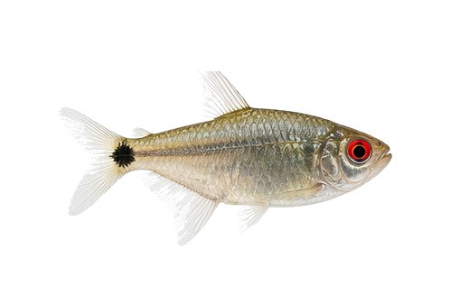
Moenkhausia sanctaefilomenae
sp_0062边距 64px
64,64,370,209
主体完整度 0.9856
/species-transparent/batch_007_species_sheet_04_红眼灯_Moenkhausia_sanctaefilomenae.png?v=cutfix4_20260510
Carassius auratus var. Ranchu
sp_0063边距 64px
64,64,358,220
主体完整度 0.9992
/species-transparent/batch_007_species_sheet_05_兰寿金鱼_Carassius_auratus.png?v=cutfix4_20260510
Carassius auratus var. Oranda
sp_0064边距 64px
64,64,371,197
主体完整度 0.9956
/species-transparent/morph_batch_003_sheet_08_泰狮金鱼_Carassius_auratus_var._Oranda.png?v=cutfix4_20260510
Carassius auratus var.
sp_0065边距 64px
64,64,381,231
主体完整度 0.9962
/species-transparent/morph_batch_003_sheet_09_蝶尾金鱼_Carassius_auratus_var.png?v=cutfix4_20260510
Carassius auratus var.
sp_0066边距 64px
64,64,401,245
主体完整度 0.9985
/species-transparent/morph_batch_003_sheet_10_鹤顶红金鱼_Carassius_auratus_var.png?v=cutfix4_20260510
Carassius auratus var.
sp_0067边距 64px
64,64,357,218
主体完整度 0.9983
/species-transparent/morph_batch_004_sheet_01_珠鳞金鱼_Carassius_auratus_var.png?v=cutfix4_20260510
Carassius auratus var.
sp_0068边距 64px
64,64,383,208
主体完整度 0.9972
/species-transparent/morph_batch_004_sheet_02_水泡金鱼_Carassius_auratus_var.png?v=cutfix4_20260510
Cyprinus carpio var.
sp_0069边距 74px
74,74,463,201
主体完整度 0.9986
/species-transparent/batch_007_species_sheet_06_红白锦鲤_Cyprinus_carpio.png?v=cutfix4_20260510
Cyprinus carpio var. Longfin
sp_0070边距 71px
71,71,444,203
主体完整度 0.9778
/species-transparent/morph_batch_007_sheet_03_蝴蝶鲤_Cyprinus_carpio_var._Longfin.png?v=cutfix4_20260510
Hemianthus callitrichoides
sp_0071边距 71px
71,71,449,191
主体完整度 0.9992
/species-transparent/batch_007_species_sheet_07_迷你矮珍珠_Hemianthus_callitrichoides.png?v=cutfix4_20260510
Eleocharis acicularis
sp_0072边距 64px
64,64,340,197
主体完整度 0.9945
/species-transparent/base_missing_003_sheet_04_牛毛毡_Eleocharis_acicularis.png?v=cutfix4_20260510
Utricularia graminifolia
sp_0073边距 68px
68,68,430,239
主体完整度 0.9986
/species-transparent/base_missing_006_sheet_10_挖耳草_Utricularia_graminifolia.png?v=cutfix4_20260510
Bucephalandra sp.
sp_0074边距 64px
64,64,390,218
主体完整度 1.0000
/species-transparent/morph_batch_012_sheet_02_辣椒榕_Bucephalandra_sp.png?v=cutfix4_20260510
Anubias barteri var. nana
sp_0075边距 64px
64,64,371,235
主体完整度 1.0000
/species-transparent/morph_batch_011_sheet_05_迷你榕_Anubias_barteri_var._nana.png?v=cutfix4_20260510
Anubias barteri var. nana 'Petite'
sp_0076边距 64px
64,64,317,233
主体完整度 0.9999
/species-transparent/morph_batch_002_sheet_05_小水榕_Anubias_barteri_var._nana_Petite.png?v=cutfix4_20260510
Cabomba caroliniana
sp_0077边距 64px
64,64,315,240
主体完整度 0.9999
/species-transparent/base_missing_001_sheet_09_绿菊_Cabomba_caroliniana.png?v=cutfix4_20260510
Rotala rotundifolia 'Green'
sp_0078边距 64px
64,64,312,223
主体完整度 0.9999
/species-transparent/base_missing_005_sheet_10_宫廷草_Rotala_rotundifolia_Green.png?v=cutfix4_20260510
Rotala rotundifolia 'Red'
sp_0079边距 64px
64,64,297,201
主体完整度 1.0000
/species-transparent/morph_batch_024_sheet_03_红宫廷_Rotala_rotundifolia_Red.png?v=cutfix4_20260510
Vesicularia dubyana
sp_0080边距 64px
64,64,346,215
主体完整度 1.0000
/species-transparent/batch_007_species_sheet_08_莫斯_三角莫斯_Vesicularia_dubyana.png?v=cutfix4_20260510
Microsorum pteropus
sp_0081边距 68px
68,68,428,257
主体完整度 0.9999
/species-transparent/base_missing_004_sheet_09_铁皇冠_Microsorum_pteropus.png?v=cutfix4_20260510
Bolbitis heudelotii
sp_0082边距 67px
67,67,419,246
主体完整度 1.0000
/species-transparent/morph_batch_011_sheet_10_黑木蕨_Bolbitis_heudelotii.png?v=cutfix4_20260510
Cryptocoryne wendtii 'Green'
sp_0083边距 64px
64,64,354,261
主体完整度 0.9999
/species-transparent/base_missing_002_sheet_09_绿温蒂椒草_Cryptocoryne_wendtii_Green.png?v=cutfix4_20260510
Aponogeton crispus
sp_0084边距 71px
71,71,449,268
主体完整度 0.9997
/species-transparent/batch_007_species_sheet_09_大浪草_Aponogeton_crispus.png?v=cutfix4_20260510
Lemna minor
sp_0085边距 64px
64,64,403,211
主体完整度 0.9999
/species-transparent/base_missing_004_sheet_02_绿浮萍_Lemna_minor.png?v=cutfix4_20260510
Limnobium laevigatum
sp_0086边距 64px
64,64,339,217
主体完整度 0.9999
/species-transparent/base_missing_004_sheet_03_圆心萍_Limnobium_laevigatum.png?v=cutfix4_20260510
Egeria densa
sp_0087边距 66px
66,66,418,201
主体完整度 0.9999
/species-transparent/base_missing_003_sheet_03_蜈蚣草_Egeria_densa.png?v=cutfix4_20260510
Nymphaea lotus
sp_0088边距 64px
64,64,348,245
主体完整度 1.0000
/species-transparent/morph_batch_018_sheet_09_睡莲_红荷根_Nymphaea_lotus.png?v=cutfix4_20260510
Limnophila aquatica
sp_0089边距 64px
64,64,304,252
主体完整度 0.9999
/species-transparent/batch_008_species_sheet_01_大宝塔_Limnophila_aquatica.png?v=cutfix4_20260510
Microsorum pteropus 'Narrow'
sp_0090边距 64px
64,64,403,223
主体完整度 0.9999
/species-transparent/morph_batch_016_sheet_03_细叶铁皇冠_Microsorum_pteropus_Narrow.png?v=cutfix4_20260510
Staurogyne repens
sp_0091边距 69px
69,69,436,216
主体完整度 1.0000
/species-transparent/base_missing_006_sheet_03_南美叉柱花_Staurogyne_repens.png?v=cutfix4_20260510
Ludwigia glandulosa
sp_0092边距 64px
64,64,279,225
主体完整度 1.0000
/species-transparent/morph_batch_015_sheet_04_红玫瑰_Ludwigia_glandulosa.png?v=cutfix4_20260510
Micranthemum umbrosum
sp_0093边距 64px
64,64,387,210
主体完整度 1.0000
/species-transparent/batch_008_species_sheet_02_十字珍珠_Micranthemum_umbrosum.png?v=cutfix4_20260510
Echinodorus amazonicus
sp_0094边距 65px
65,65,409,220
主体完整度 1.0000
/species-transparent/base_missing_003_sheet_01_大叶皇冠_Echinodorus_amazonicus.png?v=cutfix4_20260510
Ludwigia inclinata var. verticillata
sp_0095边距 64px
64,64,263,214
主体完整度 0.9969
/species-transparent/morph_batch_015_sheet_05_细叶太阳_Ludwigia_inclinata_var._verticillata.png?v=cutfix4_20260510
Bacopa caroliniana
sp_0096边距 64px
64,64,255,207
主体完整度 1.0000
/species-transparent/batch_008_species_sheet_03_虎耳草_Bacopa_caroliniana.png?v=cutfix4_20260510
Myriophyllum aquaticum
sp_0097边距 64px
64,64,339,231
主体完整度 1.0000
/species-transparent/base_missing_005_sheet_01_绿羽毛_Myriophyllum_aquaticum.png?v=cutfix4_20260510
Blyxa japonica
sp_0098边距 64px
64,64,377,242
主体完整度 1.0000
/species-transparent/base_missing_001_sheet_06_箦藻_Blyxa_japonica.png?v=cutfix4_20260510
Riccia fluitans
sp_0099边距 66px
66,66,415,185
主体完整度 1.0000
/species-transparent/batch_008_species_sheet_04_鹿角苔_Riccia_fluitans.png?v=cutfix4_20260510
Vesicularia sp.
sp_0100边距 70px
70,70,441,272
主体完整度 0.9650
/species-transparent/batch_008_species_sheet_05_青丝绒莫斯_Vesicularia.png?v=cutfix4_20260510
Fissidens fontanus
sp_0101边距 66px
66,66,415,212
主体完整度 0.9999
/species-transparent/base_missing_003_sheet_09_凤尾藓_Fissidens_fontanus.png?v=cutfix4_20260510
Cryptocoryne aponogetifolia
sp_0102边距 64px
64,64,406,254
主体完整度 1.0000
/species-transparent/base_missing_002_sheet_08_大蜻蜓椒草_Cryptocoryne_aponogetifolia.png?v=cutfix4_20260510
Scleropages formosus
sp_0103边距 78px
78,78,490,185
主体完整度 0.9595
/species-transparent/batch_008_species_sheet_06_金龙鱼_Scleropages_formosus.png?v=cutfix4_20260510
Scleropages formosus var. Red
sp_0104边距 78px
78,78,488,155
主体完整度 1.0000
/species-transparent/morph_batch_025_sheet_04_红龙鱼_Scleropages_formosus_var._Red.png?v=cutfix4_20260510
Polypterus ornatipinnis
sp_0105边距 76px
76,76,479,124
主体完整度 1.0000
/species-transparent/base_missing_005_sheet_08_恐龙鱼_大花_Polypterus_ornatipinnis.png?v=cutfix4_20260510
Erpetoichthys calabaricus
sp_0106边距 73px
73,73,460,272
主体完整度 0.8768
/species-transparent/base_missing_003_sheet_06_恐龙鱼_草绳_Erpetoichthys_calabaricus.png?v=cutfix4_20260510
Semaprochilodus taeniurus
sp_0107边距 73px
73,73,459,271
主体完整度 0.9251
/species-transparent/batch_008_species_sheet_07_飞凤鱼_国旗飞凤_Semaprochilodus_taeniurus.png?v=cutfix4_20260510
Channa bleheri
sp_0108边距 77px
77,77,486,186
主体完整度 0.9540
/species-transparent/batch_008_species_sheet_08_彩虹雷龙_Channa_bleheri.png?v=cutfix4_20260510
Channa aurantimaculata
sp_0109边距 75px
75,75,471,130
主体完整度 1.0000
/species-transparent/batch_008_species_sheet_09_眼镜蛇雷龙_Channa_aurantimaculata.png?v=cutfix4_20260510
Channa lorti
sp_0110边距 78px
78,78,488,145
主体完整度 1.0000
/species-transparent/batch_008_species_sheet_10_蓝月光雷龙_Channa_lorti.png?v=cutfix4_20260510
Sawbwa resplendens
sp_0111边距 69px
69,69,437,148
主体完整度 1.0000
/species-transparent/batch_009_species_sheet_01_亚洲红鼻_Sawbwa_resplendens.png?v=cutfix4_20260510
Poropanchax normani
sp_0112边距 69px
69,69,434,201
主体完整度 0.9999
/species-transparent/batch_009_species_sheet_02_蓝眼灯_Poropanchax_normani.png?v=cutfix4_20260510
Epiplatys annulatus
sp_0113边距 69px
69,69,437,154
主体完整度 1.0000
/species-transparent/batch_009_species_sheet_03_斑节鳉_Epiplatys_annulatus.png?v=cutfix4_20260510
Hyphessobrycon amandae
sp_0114边距 64px
64,64,337,197
主体完整度 0.9999
/species-transparent/batch_009_species_sheet_04_红莲灯_Hyphessobrycon_amandae.png?v=cutfix4_20260510
Hyphessobrycon amapaensis
sp_0115边距 64px
64,64,406,190
主体完整度 1.0000
/species-transparent/batch_009_species_sheet_05_琥珀灯_Hyphessobrycon_amapaensis.png?v=cutfix4_20260510Scleropages formosus
sp_0116边距 78px
78,78,490,185
主体完整度 0.9595
/species-transparent/batch_008_species_sheet_06_金龙鱼_Scleropages_formosus.png?v=cutfix4_20260510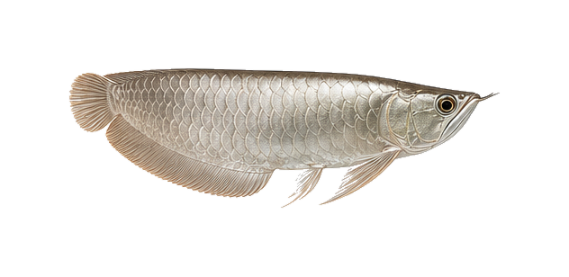
Osteoglossum bicirrhosum
sp_0117边距 76px
76,76,480,156
主体完整度 1.0000
/species-transparent/batch_009_species_sheet_06_银龙鱼_Osteoglossum_bicirrhosum.png?v=cutfix4_20260510
Osteoglossum ferreirai
sp_0118边距 76px
76,76,476,149
主体完整度 1.0000
/species-transparent/batch_009_species_sheet_07_黑龙鱼_Osteoglossum_ferreirai.png?v=cutfix4_20260510
Pantodon buchholzi
sp_0119边距 67px
67,67,424,204
主体完整度 1.0000
/species-transparent/batch_009_species_sheet_08_古代蝴蝶鱼_Pantodon_buchholzi.png?v=cutfix4_20260510
Gymnotus carapo
sp_0120边距 74px
74,74,463,115
主体完整度 1.0000
/species-transparent/batch_009_species_sheet_09_电鳗_观赏型_Gymnotus_carapo.png?v=cutfix4_20260510
Peckoltia compta
sp_0121边距 72px
72,72,450,193
主体完整度 1.0000
/species-transparent/morph_batch_020_sheet_04_黑斑马异型_L134_Peckoltia_compta.png?v=cutfix4_20260510
Panaque nigrolineatus
sp_0122边距 72px
72,72,452,185
主体完整度 1.0000
/species-transparent/morph_batch_019_sheet_06_金线绿皮异型_L190_Panaque_nigrolineatus.png?v=cutfix4_20260510
Pterygoplichthys gibbiceps
sp_0123边距 72px
72,72,454,215
主体完整度 1.0000
/species-transparent/batch_010_species_sheet_02_女王异型_L165_Pterygoplichthys_gibbiceps.png?v=cutfix4_20260510
Ancistrus sp.
sp_0124边距 74px
74,74,467,184
主体完整度 0.9993
/species-transparent/batch_010_species_sheet_03_蓝眼胡子_Ancistrus.png?v=cutfix4_20260510
Hypancistrus inspector
sp_0125边距 64px
64,64,404,229
主体完整度 0.9998
/species-transparent/morph_batch_010_sheet_10_雪球异型_L102_Hypancistrus_inspector.png?v=cutfix4_20260510
Chromobotia macracanthus
sp_0126边距 69px
69,69,436,169
主体完整度 0.9999
/species-transparent/batch_010_species_sheet_05_三间鼠_Chromobotia_macracanthus.png?v=cutfix4_20260510
Botia almorhae
sp_0127边距 72px
72,72,451,148
主体完整度 1.0000
/species-transparent/batch_010_species_sheet_06_巴基斯坦鼠_Botia_almorhae.png?v=cutfix4_20260510
Beaufortia kweichowensis
sp_0128边距 72px
72,72,454,114
主体完整度 1.0000
/species-transparent/batch_010_species_sheet_07_吸鳅_中国爬岩鳅_Beaufortia_kweichowensis.png?v=cutfix4_20260510
Zacco platypus
sp_0129边距 70px
70,70,438,172
主体完整度 0.9999
/species-transparent/batch_010_species_sheet_08_宽鳍鱲_溪流之王_Zacco_platypus.png?v=cutfix4_20260510Opsariichthys bidens
sp_0130边距 71px
71,71,444,181
主体完整度 1.0000
/species-transparent/batch_004_species_sheet_10_马口鱼_Opsariichthys_bidens.png?v=cutfix4_20260510Mastacembelus armatus
sp_0131边距 76px
76,76,479,117
主体完整度 1.0000
/species-transparent/batch_005_species_sheet_10_大刺鳅_Mastacembelus_armatus.png?v=cutfix4_20260510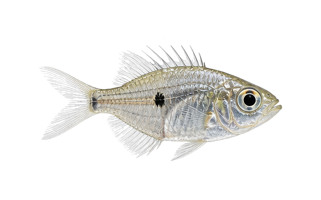
Parambassis ranga
sp_0132边距 66px
66,66,413,207
主体完整度 0.9925
/species-transparent/batch_010_species_sheet_09_玻璃拉拉_Parambassis_ranga.png?v=cutfix4_20260510
Glossolepis incisus
sp_0133边距 68px
68,68,430,158
主体完整度 1.0000
/species-transparent/batch_010_species_sheet_10_红苹果美人_Glossolepis_incisus.png?v=cutfix4_20260510
Iriatherina werneri
sp_0134边距 71px
71,71,446,156
主体完整度 1.0000
/species-transparent/batch_011_species_sheet_01_燕子美人_Iriatherina_werneri.png?v=cutfix4_20260510
Pseudomugil furcatus
sp_0135边距 68px
68,68,426,152
主体完整度 1.0000
/species-transparent/batch_011_species_sheet_02_霓虹燕子_Pseudomugil_furcatus.png?v=cutfix4_20260510Sphaerichthys osphromenoides
sp_0136边距 65px
65,65,408,214
主体完整度 1.0000
/species-transparent/batch_007_species_sheet_02_巧克力曼龙_Sphaerichthys_osphromenoides.png?v=cutfix4_20260510Semaprochilodus insignis
sp_0137边距 69px
69,69,434,218
主体完整度 1.0000
/species-transparent/batch_007_species_sheet_03_飞凤鱼_Semaprochilodus_insignis.png?v=cutfix4_20260510
Leporinus fasciatus
sp_0138边距 73px
73,73,457,209
主体完整度 1.0000
/species-transparent/batch_011_species_sheet_03_黑带好汉_Leporinus_fasciatus.png?v=cutfix4_20260510
Piaractus brachypomus
sp_0139边距 67px
67,67,419,221
主体完整度 1.0000
/species-transparent/batch_011_species_sheet_05_淡水白鲳_Piaractus_brachypomus.png?v=cutfix4_20260510
Serrasalmus rhombeus
sp_0140边距 64px
64,64,391,216
主体完整度 1.0000
/species-transparent/batch_011_species_sheet_06_黑斑水虎_Serrasalmus_rhombeus.png?v=cutfix4_20260510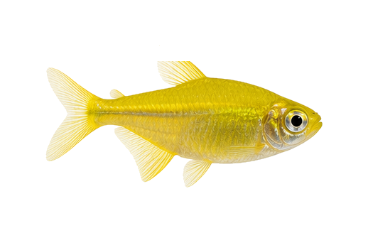
Hyphessobrycon pulchripinnis var.
sp_0141边距 64px
64,64,390,200
主体完整度 1.0000
用户反馈当前甜心柠檬灯图片不符合预期；需要按甜心柠檬灯/柠檬灯改良型重新生成或替换参考图。
/species-transparent/morph_batch_014_sheet_10_甜心柠檬灯_Hyphessobrycon_pulchripinnis_var.png?v=cutfix4_20260510
Poecilia sphenops var.
sp_0142边距 64px
64,64,400,214
主体完整度 1.0000
/species-transparent/morph_batch_022_sheet_01_球鱼_玛丽变种_Poecilia_sphenops_var.png?v=cutfix4_20260510
Poecilia reticulata var.
sp_0143边距 65px
65,65,409,189
主体完整度 0.9996
/species-transparent/morph_batch_021_sheet_04_红草尾孔雀鱼_Poecilia_reticulata_var.png?v=cutfix4_20260510
Poecilia reticulata var.
sp_0144边距 65px
65,65,409,181
主体完整度 0.9998
/species-transparent/morph_batch_021_sheet_05_蓝草尾孔雀鱼_Poecilia_reticulata_var.png?v=cutfix4_20260510
Poecilia reticulata var. Dumbo
sp_0145边距 66px
66,66,416,173
主体完整度 1.0000
/species-transparent/morph_batch_021_sheet_06_大耳孔雀鱼_Poecilia_reticulata_var._Dumbo.png?v=cutfix4_20260510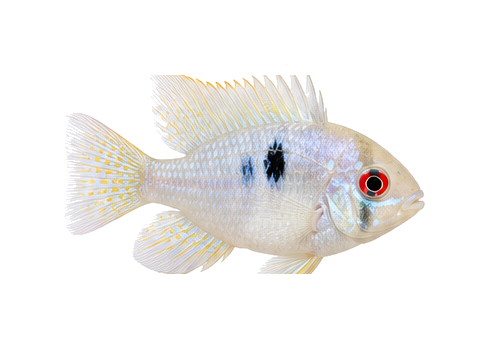
Mikrogeophagus ramirezi var. Platinum
sp_0146边距 64px
64,64,361,210
主体完整度 0.9974
/species-transparent/morph_batch_016_sheet_05_白金波子_Mikrogeophagus_ramirezi_var._Platinum.png?v=cutfix4_20260510
Amatitlania nigrofasciata var. Blue
sp_0147边距 66px
66,66,415,190
主体完整度 1.0000
/species-transparent/morph_batch_001_sheet_03_蓝宝鹦鹉鱼_Amatitlania_nigrofasciata_var._Blue.png?v=cutfix4_20260510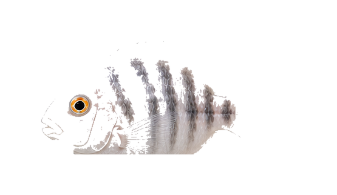
Amatitlania nigrofasciata var. White
sp_0148边距 67px
67,67,421,188
主体完整度 0.9978
/species-transparent/morph_batch_001_sheet_04_雪玉鹦鹉鱼_Amatitlania_nigrofasciata_var._White.png?v=cutfix4_20260510
Carassius auratus var. Panda
sp_0149边距 64px
64,64,347,256
主体完整度 1.0000
/species-transparent/morph_batch_004_sheet_03_熊猫金鱼_Carassius_auratus_var._Panda.png?v=cutfix4_20260510
Carassius auratus var. Oranda
sp_0150边距 64px
64,64,347,210
主体完整度 0.9979
/species-transparent/morph_batch_004_sheet_04_短尾狮头金鱼_Carassius_auratus_var._Oranda.png?v=cutfix4_20260510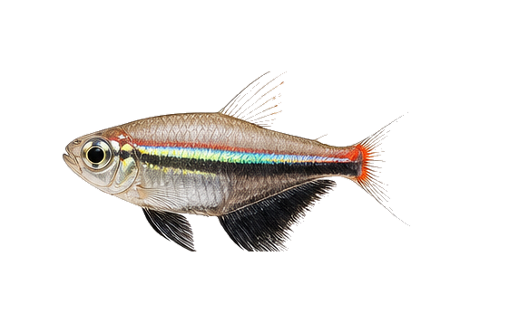
Gymnocorymbus ternetzi var.
sp_0151边距 68px
68,68,425,210
主体完整度 0.9844
/species-transparent/morph_batch_008_sheet_06_彩色裙鱼_激光鱼_Gymnocorymbus_ternetzi_var.png?v=cutfix4_20260510
Danio rerio var. GloFish
sp_0152边距 71px
71,71,448,158
主体完整度 1.0000
/species-transparent/morph_batch_007_sheet_05_荧光斑马鱼_Danio_rerio_var._GloFish.png?v=cutfix4_20260510
Trichopodus leerii var. Balloon
sp_0153边距 64px
64,64,392,198
主体完整度 0.9917
/species-transparent/morph_batch_027_sheet_04_球形珍珠马甲_Trichopodus_leerii_var._Balloon.png?v=cutfix4_20260510
Hemigrammus bleheri var.
sp_0154边距 69px
69,69,433,195
主体完整度 0.9844
/species-transparent/morph_batch_010_sheet_02_红鼻灯_改良_Hemigrammus_bleheri_var.png?v=cutfix4_20260510
Paracheirodon innesi var.
sp_0155边距 70px
70,70,443,194
主体完整度 0.9906
/species-transparent/morph_batch_020_sheet_01_长鳍红绿灯_Paracheirodon_innesi_var.png?v=cutfix4_20260510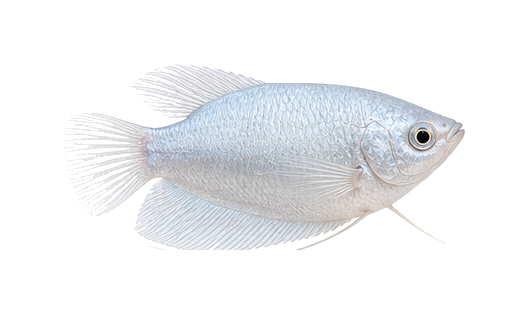
Trichopodus trichopterus var. Platinum
sp_0156边距 64px
64,64,401,186
主体完整度 0.9914
/species-transparent/morph_batch_027_sheet_08_白金蓝曼龙_Trichopodus_trichopterus_var._Platinum.png?v=cutfix4_20260510
Mikrogeophagus ramirezi var. Blue
sp_0157边距 64px
64,64,373,213
主体完整度 0.9999
/species-transparent/morph_batch_016_sheet_06_蓝宝石短鲷_Mikrogeophagus_ramirezi_var._Blue.png?v=cutfix4_20260510
Xiphophorus hellerii var.
sp_0158边距 70px
70,70,442,173
主体完整度 1.0000
/species-transparent/morph_batch_028_sheet_10_红苹果剑尾_Xiphophorus_hellerii_var.png?v=cutfix4_20260510
Ancistrus sp. Gold
sp_0159边距 75px
75,75,474,187
主体完整度 0.9997
/species-transparent/morph_batch_001_sheet_06_黄金胡子_异型变种_Ancistrus_sp._Gold.png?v=cutfix4_20260510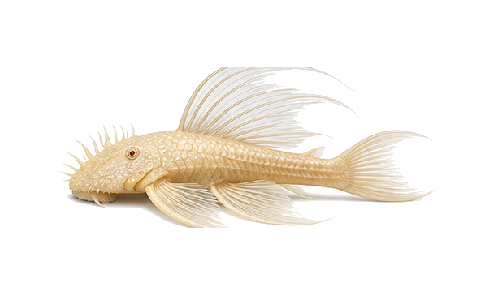
Ancistrus sp. Longfin Platinum
sp_0160边距 73px
73,73,462,208
主体完整度 0.9989
/species-transparent/morph_batch_001_sheet_07_大帆白金胡子_Ancistrus_sp._Longfin_Platinum.png?v=cutfix4_20260510
Poecilia sphenops var. Chocolate
sp_0161边距 66px
66,66,414,218
主体完整度 1.0000
/species-transparent/morph_batch_022_sheet_02_巧克力皮球_Poecilia_sphenops_var._Chocolate.png?v=cutfix4_20260510
Carassius auratus var.
sp_0162边距 64px
64,64,404,221
主体完整度 0.9999
/species-transparent/morph_batch_004_sheet_05_红草鱼_Carassius_auratus_var.png?v=cutfix4_20260510
Cyprinus carpio var. Kohaku
sp_0163边距 74px
74,74,464,194
主体完整度 0.9870
/species-transparent/morph_batch_007_sheet_04_鸿运当头锦鲤_Cyprinus_carpio_var._Kohaku.png?v=cutfix4_20260510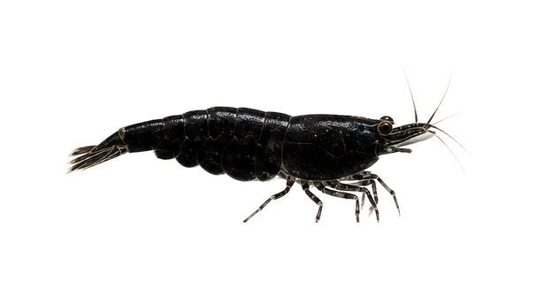
Neocaridina davidi var. Black
sp_0164边距 73px
73,73,461,179
主体完整度 0.9959
/species-transparent/morph_batch_017_sheet_06_黑金刚米虾_Neocaridina_davidi_var._Black.png?v=cutfix4_20260510
Neocaridina davidi var. Yellow Line
sp_0165边距 71px
71,71,448,179
主体完整度 0.9966
/species-transparent/morph_batch_017_sheet_07_黄金背米虾_Neocaridina_davidi_var._Yellow_Line.png?v=cutfix4_20260510
Neocaridina davidi var. Fire Red
sp_0166边距 72px
72,72,450,190
主体完整度 0.9960
/species-transparent/morph_batch_017_sheet_08_极火米虾_高等级_Neocaridina_davidi_var._Fire_Red.png?v=cutfix4_20260510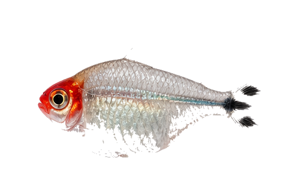
Hemigrammus bleheri var. Balloon
sp_0167边距 64px
64,64,390,205
主体完整度 0.9916
/species-transparent/morph_batch_010_sheet_03_球形红鼻剪刀_Hemigrammus_bleheri_var._Balloon.png?v=cutfix4_20260510
Poecilia latipinna var. Gold
sp_0168边距 66px
66,66,414,198
主体完整度 1.0000
/species-transparent/batch_011_species_sheet_09_金玛丽_Poecilia_latipinna.png?v=cutfix4_20260510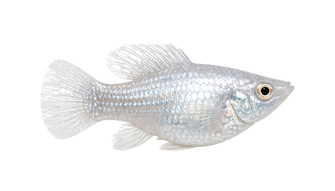
Poecilia latipinna var. Silver
sp_0169边距 69px
69,69,435,189
主体完整度 0.9947
/species-transparent/morph_batch_020_sheet_10_银玛丽_Poecilia_latipinna_var._Silver.png?v=cutfix4_20260510
Poecilia reticulata var. Full Black
sp_0170边距 65px
65,65,411,175
主体完整度 1.0000
/species-transparent/morph_batch_021_sheet_07_黑金刚孔雀鱼_Poecilia_reticulata_var._Full_Black.png?v=cutfix4_20260510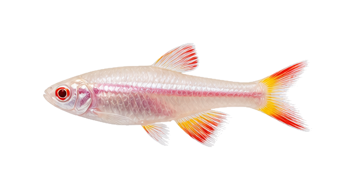
Tanichthys albonubes var. Albino
sp_0171边距 71px
71,71,445,172
主体完整度 0.9987
/species-transparent/morph_batch_026_sheet_08_白玉金丝鱼_Tanichthys_albonubes_var._Albino.png?v=cutfix4_20260510
Tanichthys albonubes var. Longfin
sp_0172边距 73px
73,73,458,192
主体完整度 0.9976
/species-transparent/morph_batch_026_sheet_09_长鳍白云金丝_Tanichthys_albonubes_var._Longfin.png?v=cutfix4_20260510
Salminus brasiliensis var.
sp_0173边距 74px
74,74,465,186
主体完整度 1.0000
/species-transparent/batch_011_species_sheet_10_黄金河虎_Salminus_brasiliensis.png?v=cutfix4_20260510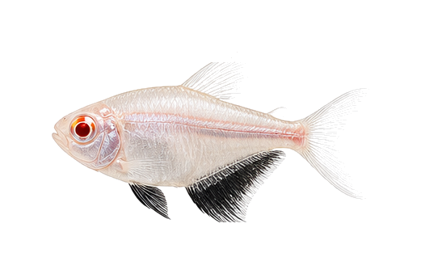
Gymnocorymbus ternetzi var. Albino
sp_0174边距 64px
64,64,393,211
主体完整度 0.9704
/species-transparent/morph_batch_008_sheet_07_红眼白子红裙_Gymnocorymbus_ternetzi_var._Albino.png?v=cutfix4_20260510
Pterophyllum scalare var. Red
sp_0175边距 90px
90,90,502,301
主体完整度 0.8883
/species-display/sp_0175_血钻神仙_display_white.png?v=displayfix_20260510
Pterophyllum scalare var. Marble
sp_0176边距 90px
90,90,502,299
主体完整度 0.8925
/species-display/sp_0176_黑白大理石神仙_display_white.png?v=displayfix_20260510
Pterophyllum scalare var. Blue
sp_0177边距 90px
90,90,502,296
主体完整度 0.8927
/species-display/sp_0177_红眼蓝钻神仙_display_white.png?v=displayfix_20260510
Pterophyllum scalare var. Panda
sp_0178边距 90px
90,90,502,301
主体完整度 0.8772
/species-display/sp_0178_熊猫神仙_display_white.png?v=displayfix_20260510
Trichopodus trichopterus var. Balloon
sp_0179边距 66px
66,66,414,201
主体完整度 0.9999
/species-transparent/morph_batch_027_sheet_09_球形曼龙_蓝_金_Trichopodus_trichopterus_var._Balloon.png?v=cutfix4_20260510
Carassius auratus var. Telescopes
sp_0180边距 64px
64,64,362,231
主体完整度 0.9968
/species-transparent/morph_batch_004_sheet_06_龙睛金鱼_Carassius_auratus_var._Telescopes.png?v=cutfix4_20260510
Gnathonemus petersii
sp_0181边距 70px
70,70,440,216
主体完整度 1.0000
/species-transparent/batch_012_species_sheet_01_象鼻鱼_Gnathonemus_petersii.png?v=cutfix4_20260510
Panaque sp. L191
sp_0182边距 71px
71,71,444,184
主体完整度 1.0000
/species-transparent/morph_batch_019_sheet_05_蓝眼异型_L191_Panaque_sp._L191.png?v=cutfix4_20260510
Xanthichthys mento
sp_0183边距 66px
66,66,414,200
主体完整度 0.9998
/species-transparent/morph_batch_028_sheet_07_红纹拟鳞鲀_红尾炮弹_Xanthichthys_mento.png?v=cutfix4_20260510
Centropyge heraldi
sp_0184边距 64px
64,64,339,211
主体完整度 1.0000
/species-transparent/batch_012_species_sheet_04_黄头仙_Centropyge_heraldi.png?v=cutfix4_20260510
Pomacanthus annularis
sp_0185边距 64px
64,64,361,210
主体完整度 1.0000
/species-transparent/batch_012_species_sheet_05_蓝环神仙_Pomacanthus_annularis.png?v=cutfix4_20260510
Chaetodon auriga
sp_0186边距 64px
64,64,339,194
主体完整度 0.9959
/species-transparent/batch_012_species_sheet_06_人字蝶_Chaetodon_auriga.png?v=cutfix4_20260510
Chrysiptera cyanea
sp_0187边距 64px
64,64,332,206
主体完整度 1.0000
/species-transparent/batch_012_species_sheet_07_蓝魔鬼_Chrysiptera_cyanea.png?v=cutfix4_20260510
Lysmata amboinensis
sp_0188边距 64px
64,64,405,199
主体完整度 0.9780
/species-transparent/base_missing_004_sheet_06_清洁虾_医生虾_Lysmata_amboinensis.png?v=cutfix4_20260510
Thor amboinensis
sp_0189边距 70px
70,70,439,205
主体完整度 0.9942
/species-transparent/base_missing_006_sheet_06_性感虾_Thor_amboinensis.png?v=cutfix4_20260510
Lysmata boggesi
sp_0190边距 64px
64,64,383,191
主体完整度 0.9911
/species-transparent/base_missing_004_sheet_07_薄荷虾_Lysmata_boggesi.png?v=cutfix4_20260510
Paguristes cadenati
sp_0191边距 64px
64,64,394,193
主体完整度 0.9998
/species-transparent/morph_batch_019_sheet_03_寄居蟹_红脚_Paguristes_cadenati.png?v=cutfix4_20260510
Entacmaea quadricolor
sp_0192边距 64px
64,64,406,198
主体完整度 0.9460
/species-transparent/base_missing_003_sheet_05_海葵_奶嘴_Entacmaea_quadricolor.png?v=cutfix4_20260510
Stichodactyla haddoni
sp_0193边距 67px
67,67,419,219
主体完整度 1.0000
/species-transparent/base_missing_006_sheet_04_地毯海葵_Stichodactyla_haddoni.png?v=cutfix4_20260510
Protula bispiralis
sp_0194边距 64px
64,64,335,219
主体完整度 0.9946
/species-transparent/batch_012_species_sheet_08_管虫_硬管_Protula_bispiralis.png?v=cutfix4_20260510
Astropecten polyacanthus
sp_0195边距 64px
64,64,361,227
主体完整度 1.0000
/species-transparent/batch_012_species_sheet_09_海星_翻砂_Astropecten_polyacanthus.png?v=cutfix4_20260510
Sahyadria denisonii var. Gold
sp_0196边距 66px
66,66,414,191
主体完整度 1.0000
/species-transparent/morph_batch_024_sheet_06_一眉道人_黄金型_Sahyadria_denisonii_var._Gold.png?v=cutfix4_20260510
Channa stewartii
sp_0197边距 75px
75,75,471,156
主体完整度 1.0000
/species-transparent/batch_012_species_sheet_10_蓝宝石雷龙_Channa_stewartii.png?v=cutfix4_20260510
Channa diplogramma
sp_0198边距 75px
75,75,473,135
主体完整度 1.0000
/species-transparent/batch_013_species_sheet_01_红宝石雷龙_Channa_diplogramma.png?v=cutfix4_20260510
Badis badis
sp_0199边距 65px
65,65,411,208
主体完整度 1.0000
/species-transparent/batch_013_species_sheet_02_珍珠麒麟_Badis_badis.png?v=cutfix4_20260510
Dario dario
sp_0200边距 71px
71,71,444,200
主体完整度 1.0000
/species-transparent/batch_013_species_sheet_03_变色鱼_喷火麒麟_Dario_dario.png?v=cutfix4_20260510
Leporacanthicus cf. galaxias
sp_0201边距 73px
73,73,461,214
主体完整度 1.0000
/species-transparent/morph_batch_015_sheet_02_黑白双星异型_L240_Leporacanthicus_cf._galaxias.png?v=cutfix4_20260510
Scobinancistrus aureatus
sp_0202边距 70px
70,70,438,211
主体完整度 1.0000
/species-transparent/morph_batch_025_sheet_10_黄金美洲豹异型_L014_Scobinancistrus_aureatus.png?v=cutfix4_20260510
Poecilia sphenops var. Green
sp_0203边距 65px
65,65,410,212
主体完整度 1.0000
/species-transparent/morph_batch_022_sheet_03_绿赏皮球_Poecilia_sphenops_var._Green.png?v=cutfix4_20260510
Hemigrammus bleheri var.
sp_0204边距 64px
64,64,399,209
主体完整度 0.9972
/species-transparent/morph_batch_010_sheet_04_黑金刚红鼻剪刀_Hemigrammus_bleheri_var.png?v=cutfix4_20260510
Hyphessobrycon herbertaxelrodi var.
sp_0205边距 69px
69,69,435,199
主体完整度 0.9831
/species-transparent/batch_013_species_sheet_06_紫艳红莲灯_Hyphessobrycon_herbertaxelrodi.png?v=cutfix4_20260510
Paracheirodon innesi var. Diamond
sp_0206边距 68px
68,68,429,210
主体完整度 0.9893
/species-transparent/morph_batch_020_sheet_02_电光红绿灯_Paracheirodon_innesi_var._Diamond.png?v=cutfix4_20260510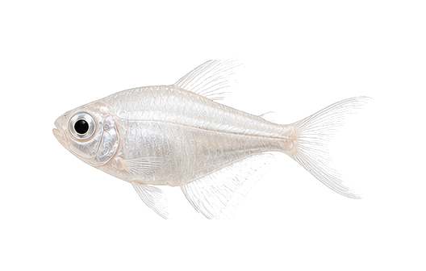
Gymnocorymbus ternetzi var. White
sp_0207边距 64px
64,64,400,208
主体完整度 0.9389
/species-transparent/morph_batch_008_sheet_08_白金黑裙_Gymnocorymbus_ternetzi_var._White.png?v=cutfix4_20260510
Aphyocharax anisitsi var. Balloon
sp_0208边距 66px
66,66,418,219
主体完整度 0.9975
/species-transparent/batch_013_species_sheet_07_球形红十字_Aphyocharax_anisitsi.png?v=cutfix4_20260510
Poecilia latipinna var. Blood
sp_0209边距 64px
64,64,385,203
主体完整度 1.0000
/species-transparent/morph_batch_021_sheet_01_血玛丽鱼_Poecilia_latipinna_var._Blood.png?v=cutfix4_20260510
Pangio kuhlii var.
sp_0210边距 74px
74,74,463,82
主体完整度 0.9999
/species-transparent/batch_013_species_sheet_08_黄金眼镜蛇蛇鱼_Pangio_kuhlii.png?v=cutfix4_20260510
Thorichthys meeki var.
sp_0211边距 68px
68,68,430,231
主体完整度 0.9999
/species-transparent/batch_013_species_sheet_09_大点火口_Thorichthys_meeki.png?v=cutfix4_20260510
Hemigrammus rodwayi var.
sp_0212边距 69px
69,69,435,197
主体完整度 0.9985
/species-transparent/batch_013_species_sheet_10_蓝眼金灯_Hemigrammus_rodwayi.png?v=cutfix4_20260510
Crossocheilus langei var. Gold
sp_0213边距 75px
75,75,472,158
主体完整度 0.9994
/species-transparent/morph_batch_006_sheet_10_黑线飞狐_金型_Crossocheilus_langei_var._Gold.png?v=cutfix4_20260510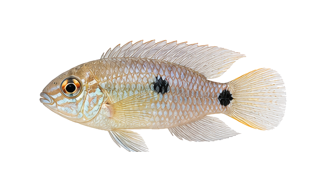
Pelvicachromis pulcher var. Albino
sp_0214边距 67px
67,67,422,193
主体完整度 1.0000
/species-transparent/batch_014_species_sheet_02_白金西非凤凰_Pelvicachromis_pulcher.png?v=cutfix4_20260510
Sahyadria denisonii var. Longfin
sp_0215边距 71px
71,71,444,203
主体完整度 0.9974
/species-transparent/morph_batch_024_sheet_07_长鳍一眉道人_Sahyadria_denisonii_var._Longfin.png?v=cutfix4_20260510
Channa aurantimaculata var.
sp_0216边距 76px
76,76,477,140
主体完整度 1.0000
/species-transparent/morph_batch_006_sheet_03_黄金雷龙_Channa_aurantimaculata_var.png?v=cutfix4_20260510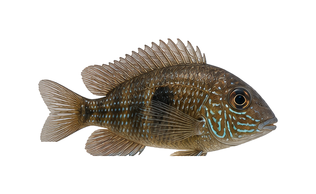
Geophagus sp. var. Platinum
sp_0217边距 64px
64,64,404,199
主体完整度 1.0000
/species-transparent/batch_014_species_sheet_03_白金黑地魔_Geophagus.png?v=cutfix4_20260510
Hyphessobrycon erythrostigma
sp_0218边距 67px
67,67,420,208
主体完整度 0.9818
/species-transparent/batch_014_species_sheet_04_血心灯_Hyphessobrycon_erythrostigma.png?v=cutfix4_20260510
Mikrogeophagus ramirezi var. Gold Balloon
sp_0219边距 64px
64,64,339,210
主体完整度 1.0000
/species-transparent/morph_batch_016_sheet_07_球形金波子_Mikrogeophagus_ramirezi_var._Gold_Balloon.png?v=cutfix4_20260510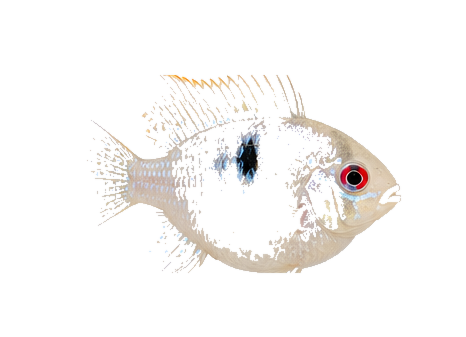
Mikrogeophagus ramirezi var. Platinum Balloon
sp_0220边距 64px
64,64,338,209
主体完整度 1.0000
/species-transparent/morph_batch_016_sheet_08_白金波子_球形_Mikrogeophagus_ramirezi_var._Platinum_Balloon.png?v=cutfix4_20260510
Apistogramma agassizii var. Fire Red
sp_0221边距 65px
65,65,407,202
主体完整度 0.9956
/species-transparent/morph_batch_002_sheet_08_长鳍阿卡西短鲷_Apistogramma_agassizii_var._Fire_Red.png?v=cutfix4_20260510
Amatitlania nigrofasciata var. Jellybean
sp_0222边距 64px
64,64,363,186
主体完整度 0.9961
/species-transparent/morph_batch_001_sheet_05_蓝宝鹦鹉_球形_Amatitlania_nigrofasciata_var._Jellybean.png?v=cutfix4_20260510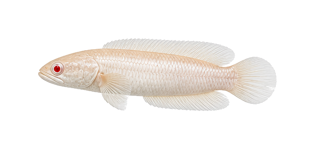
Channa asiatica var. Albino
sp_0223边距 75px
75,75,470,144
主体完整度 0.9999
/species-transparent/morph_batch_006_sheet_02_红眼白子雷龙_Channa_asiatica_var._Albino.png?v=cutfix4_20260510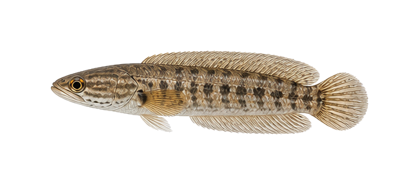
Channa argus var. Platinum
sp_0224边距 73px
73,73,462,122
主体完整度 1.0000
/species-transparent/batch_014_species_sheet_05_白金雷龙_Channa_argus.png?v=cutfix4_20260510
Hemigrammus bleheri var. Longfin
sp_0225边距 66px
66,66,413,215
主体完整度 0.9806
/species-transparent/morph_batch_010_sheet_05_大帆红鼻剪刀_Hemigrammus_bleheri_var._Longfin.png?v=cutfix4_20260510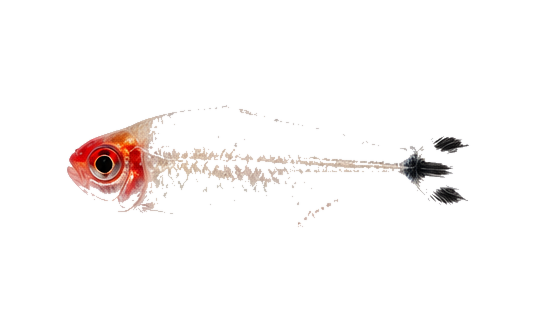
Hemigrammus bleheri var. Platinum
sp_0226边距 66px
66,66,417,199
主体完整度 0.9798
/species-transparent/morph_batch_010_sheet_06_白金红鼻剪刀_Hemigrammus_bleheri_var._Platinum.png?v=cutfix4_20260510
Gymnocorymbus ternetzi var. Longfin
sp_0227边距 65px
65,65,412,228
主体完整度 0.9794
/species-transparent/morph_batch_008_sheet_09_长鳍红裙鱼_Gymnocorymbus_ternetzi_var._Longfin.png?v=cutfix4_20260510
Gymnocorymbus ternetzi var. Balloon
sp_0228边距 64px
64,64,400,225
主体完整度 0.9850
/species-transparent/morph_batch_008_sheet_10_球形红裙鱼_Gymnocorymbus_ternetzi_var._Balloon.png?v=cutfix4_20260510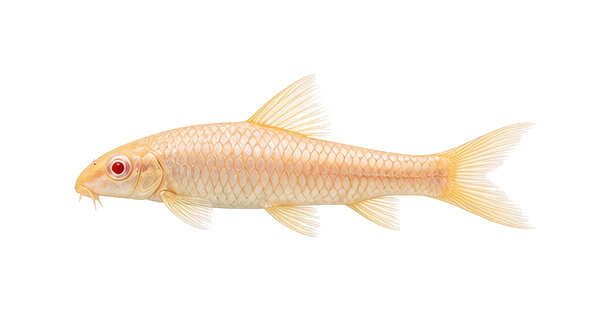
Gyrinocheilus aymonieri var. Albino
sp_0229边距 74px
74,74,463,164
主体完整度 0.9989
/species-transparent/morph_batch_009_sheet_09_白化金苔鼠_Gyrinocheilus_aymonieri_var._Albino.png?v=cutfix4_20260510
Ancistrus sp. Gold Longfin
sp_0230边距 76px
76,76,476,208
主体完整度 0.9999
/species-transparent/morph_batch_001_sheet_08_大帆黄金胡子_Ancistrus_sp._Gold_Longfin.png?v=cutfix4_20260510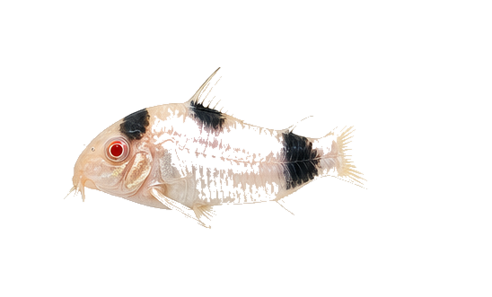
Corydoras panda var. Albino
sp_0231边距 66px
66,66,416,199
主体完整度 0.9901
/species-transparent/morph_batch_006_sheet_09_红眼白子熊猫鼠_Corydoras_panda_var._Albino.png?v=cutfix4_20260510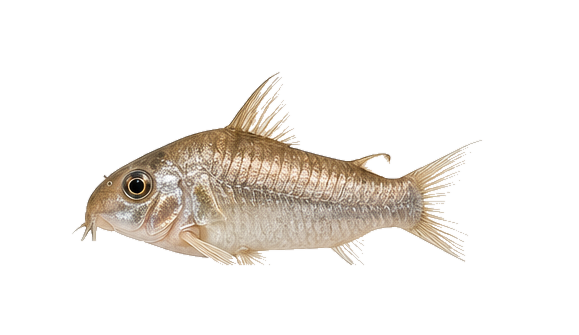
Corydoras aeneus var. Platinum
sp_0232边距 70px
70,70,439,195
主体完整度 0.9960
/species-transparent/morph_batch_006_sheet_08_白金咖啡鼠_Corydoras_aeneus_var._Platinum.png?v=cutfix4_20260510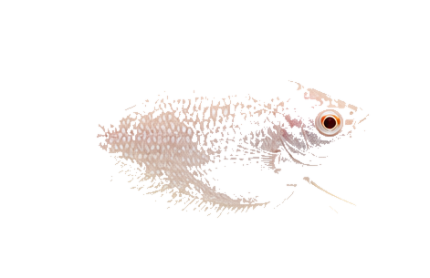
Trichopodus leerii var. Albino Balloon
sp_0233边距 64px
64,64,343,177
主体完整度 0.9862
/species-transparent/morph_batch_027_sheet_05_球形珍珠马甲_红眼_Trichopodus_leerii_var._Albino_Balloon.png?v=cutfix4_20260510
Dario dario var. Gold
sp_0234边距 64px
64,64,404,203
主体完整度 1.0000
/species-transparent/morph_batch_008_sheet_02_黄金变色龙_改良_Dario_dario_var._Gold.png?v=cutfix4_20260510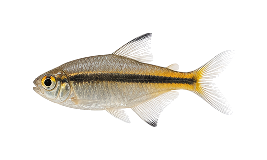
Nematobrycon palmeri var. Platinum
sp_0235边距 64px
64,64,398,187
主体完整度 0.9906
/species-transparent/batch_014_species_sheet_06_白金黑帝王灯_Nematobrycon_palmeri.png?v=cutfix4_20260510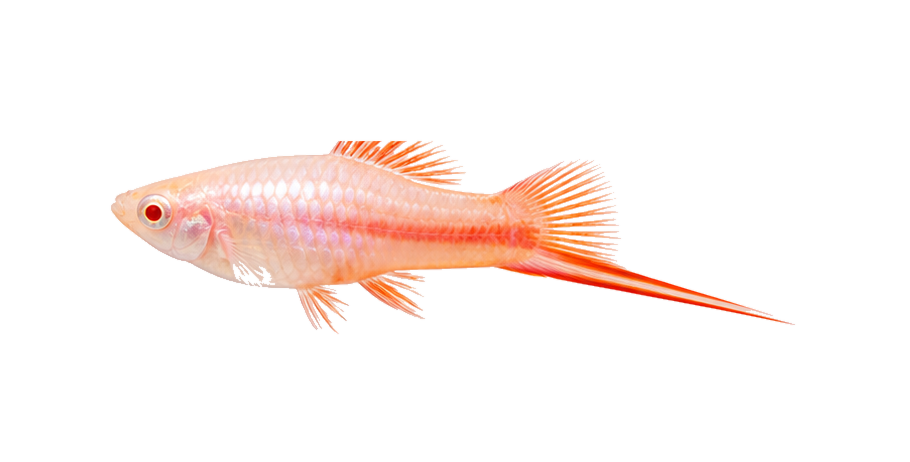
Xiphophorus hellerii var. Albino Red
sp_0236边距 110px
110,110,690,242
主体完整度 0.9978
/species-transparent/morph_batch_029_sheet_01_红眼白子红剑_Xiphophorus_hellerii_var._Albino_Red.png?v=cutfix4_20260510
Poecilia latipinna var. High Fin Red
sp_0237边距 64px
64,64,392,216
主体完整度 1.0000
/species-transparent/morph_batch_021_sheet_02_高鳍红玛丽_Poecilia_latipinna_var._High_Fin_Red.png?v=cutfix4_20260510
Neocaridina davidi var. Full Black
sp_0238边距 71px
71,71,447,186
主体完整度 0.9968
/species-transparent/morph_batch_017_sheet_09_黑金刚米虾_极品_Neocaridina_davidi_var._Full_Black.png?v=cutfix4_20260510
Neocaridina davidi var. Bloody Mary
sp_0239边距 71px
71,71,447,193
主体完整度 0.9955
/species-transparent/morph_batch_017_sheet_10_血腥玛丽米虾_Neocaridina_davidi_var._Bloody_Mary.png?v=cutfix4_20260510
Pterophyllum scalare var. Platinum Longfin
sp_0240边距 90px
90,90,502,301
主体完整度 0.8554
/species-display/sp_0240_白金神仙_长鳍_display_white.png?v=displayfix_20260510
Pterophyllum scalare var. Marble Balloon
sp_0241边距 90px
90,90,502,291
主体完整度 0.8690
/species-display/sp_0241_大理石神仙_球形_display_white.png?v=displayfix_20260510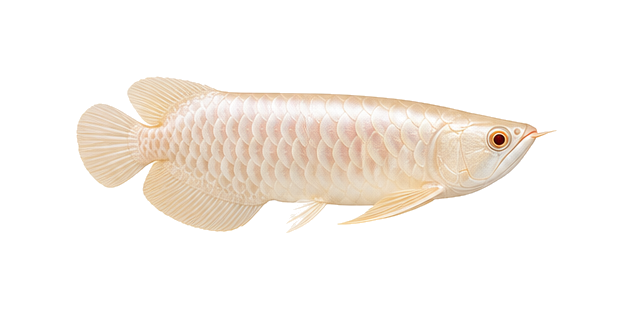
Scleropages formosus var. Albino
sp_0242边距 76px
76,76,481,157
主体完整度 0.9999
/species-transparent/morph_batch_025_sheet_05_红眼白子金龙_Scleropages_formosus_var._Albino.png?v=cutfix4_20260510
Cichlasoma var. Blood Parrot Balloon
sp_0243边距 64px
64,64,335,199
主体完整度 0.9995
/species-transparent/morph_batch_006_sheet_07_球形血鹦鹉_Cichlasoma_var._Blood_Parrot_Balloon.png?v=cutfix4_20260510
Poecilia reticulata var. Yellow Grass
sp_0244边距 64px
64,64,404,178
主体完整度 0.9994
/species-transparent/morph_batch_021_sheet_08_黄金草尾孔雀_Poecilia_reticulata_var._Yellow_Grass.png?v=cutfix4_20260510
Poecilia reticulata var. Kohaku
sp_0245边距 65px
65,65,409,196
主体完整度 0.9995
/species-transparent/morph_batch_021_sheet_09_红白剑尾孔雀_Poecilia_reticulata_var._Kohaku.png?v=cutfix4_20260510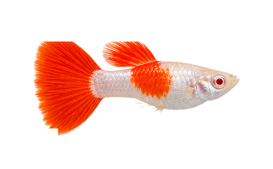
Poecilia reticulata var. Albino Kohaku
sp_0246边距 66px
66,66,414,206
主体完整度 0.9999
/species-transparent/morph_batch_021_sheet_10_白子红白孔雀_Poecilia_reticulata_var._Albino_Kohaku.png?v=cutfix4_20260510
Pterophyllum scalare var. Blue Balloon
sp_0247边距 90px
90,90,502,291
主体完整度 0.8728
/species-display/sp_0247_蓝钻神仙_球形_display_white.png?v=displayfix_20260510
Osphronemus goramy var. Gold
sp_0248边距 66px
66,66,416,215
主体完整度 1.0000
/species-transparent/batch_014_species_sheet_07_黄金战舰_Osphronemus_goramy.png?v=cutfix4_20260510
Pomacea bridgesii var. Gold
sp_0249边距 64px
64,64,310,213
主体完整度 1.0000
/species-transparent/morph_batch_022_sheet_06_红眼金苹果螺_Pomacea_bridgesii_var._Gold.png?v=cutfix4_20260510
Pomacea bridgesii var. Blue
sp_0250边距 64px
64,64,322,208
主体完整度 1.0000
/species-transparent/morph_batch_022_sheet_07_蓝珍珠神秘螺_Pomacea_bridgesii_var._Blue.png?v=cutfix4_20260510
Pomacea bridgesii var. Purple
sp_0251边距 64px
64,64,315,208
主体完整度 1.0000
/species-transparent/morph_batch_022_sheet_08_紫晶神秘螺_Pomacea_bridgesii_var._Purple.png?v=cutfix4_20260510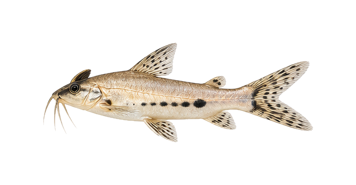
Synodontis nigriventris var. White
sp_0252边距 72px
72,72,455,168
主体完整度 0.9999
/species-transparent/batch_014_species_sheet_08_白金反游猫_Synodontis_nigriventris.png?v=cutfix4_20260510
Sahyadria denisonii var. Red Line
sp_0253边距 67px
67,67,424,178
主体完整度 1.0000
/species-transparent/morph_batch_024_sheet_08_红纹一眉道人_Sahyadria_denisonii_var._Red_Line.png?v=cutfix4_20260510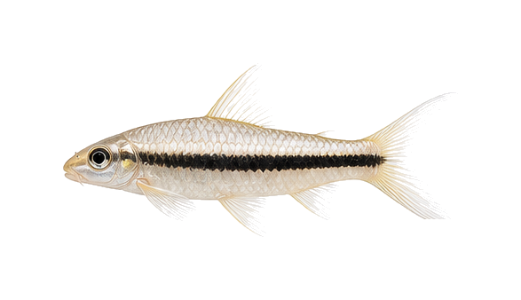
Crossocheilus langei var. Platinum
sp_0254边距 71px
71,71,445,196
主体完整度 0.9809
/species-transparent/morph_batch_007_sheet_01_白金黑线飞狐_Crossocheilus_langei_var._Platinum.png?v=cutfix4_20260510
Hyphessobrycon sweglesi var. Longfin
sp_0255边距 64px
64,64,389,177
主体完整度 0.9999
/species-transparent/batch_014_species_sheet_09_大帆红衣梦幻旗_Hyphessobrycon_sweglesi.png?v=cutfix4_20260510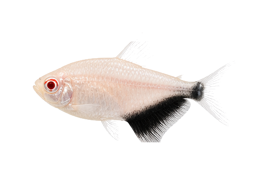
Gymnocorymbus ternetzi var. Albino Red Eye
sp_0256边距 64px
64,64,397,215
主体完整度 0.9787
/species-transparent/morph_batch_009_sheet_01_红眼白子黑裙鱼_Gymnocorymbus_ternetzi_var._Albino_Red_Eye.png?v=cutfix4_20260510
Peckoltia compta var. Gold
sp_0257边距 72px
72,72,453,183
主体完整度 1.0000
/species-transparent/morph_batch_020_sheet_05_黄金斑马异型_L134改良_Peckoltia_compta_var._Gold.png?v=cutfix4_20260510
Betta splendens var. Koi
sp_0258边距 68px
68,68,425,267
主体完整度 1.0000
/species-transparent/batch_014_species_sheet_10_糖果KOI斗鱼_Betta_splendens.png?v=cutfix4_20260510
Betta splendens var. Halfmoon
sp_0259边距 64px
64,64,381,227
主体完整度 0.9995
/species-transparent/morph_batch_002_sheet_10_半月斗鱼_蓝蝴蝶_Betta_splendens_var._Halfmoon.png?v=cutfix4_20260510
Betta splendens var. Crowntail
sp_0260边距 64px
64,64,388,230
主体完整度 0.9998
/species-transparent/morph_batch_003_sheet_01_狮王斗鱼_红黑_Betta_splendens_var._Crowntail.png?v=cutfix4_20260510
Betta splendens var. Dumbo Halfmoon
sp_0261边距 64px
64,64,385,225
主体完整度 0.9928
/species-transparent/morph_batch_003_sheet_02_大耳半月斗鱼_Betta_splendens_var._Dumbo_Halfmoon.png?v=cutfix4_20260510
Betta splendens var. Dragon
sp_0262边距 64px
64,64,395,223
主体完整度 0.9999
/species-transparent/morph_batch_003_sheet_03_将军斗鱼_蓝龙_Betta_splendens_var._Dragon.png?v=cutfix4_20260510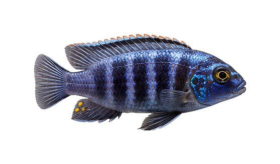
Maylandia estherae var. Albino
sp_0263边距 67px
67,67,422,193
主体完整度 1.0000
/species-transparent/batch_015_species_sheet_01_雪中红慈鲷_Maylandia_estherae.png?v=cutfix4_20260510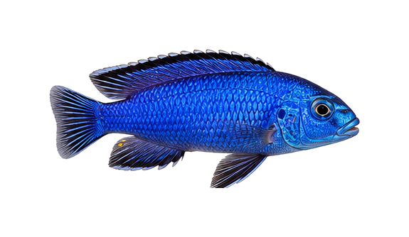
Sciaenochromis fryeri var. White
sp_0264边距 69px
69,69,437,196
主体完整度 1.0000
/species-transparent/batch_015_species_sheet_02_白金阿里慈鲷_Sciaenochromis_fryeri.png?v=cutfix4_20260510
Nimbochromis livingstonii var.
sp_0265边距 69px
69,69,436,196
主体完整度 1.0000
/species-transparent/batch_015_species_sheet_03_血中红慈鲷_Nimbochromis_livingstonii.png?v=cutfix4_20260510
Altolamprologus calvus var. Gold
sp_0266边距 70px
70,70,438,217
主体完整度 1.0000
/species-transparent/morph_batch_001_sheet_02_黄金珍珠虎_改良_Altolamprologus_calvus_var._Gold.png?v=cutfix4_20260510
Trichopodus leerii var. Red Head
sp_0267边距 64px
64,64,392,190
主体完整度 0.9941
/species-transparent/morph_batch_027_sheet_06_红头珍珠马甲_Trichopodus_leerii_var._Red_Head.png?v=cutfix4_20260510
Trichopodus trichopterus var. Blue Balloon
sp_0268边距 64px
64,64,405,214
主体完整度 0.9999
/species-transparent/morph_batch_027_sheet_10_球形蓝曼龙_Trichopodus_trichopterus_var._Blue_Balloon.png?v=cutfix4_20260510
Trichopodus trichopterus var. Gold Balloon
sp_0269边距 64px
64,64,361,208
主体完整度 1.0000
/species-transparent/morph_batch_028_sheet_01_球形金曼龙_Trichopodus_trichopterus_var._Gold_Balloon.png?v=cutfix4_20260510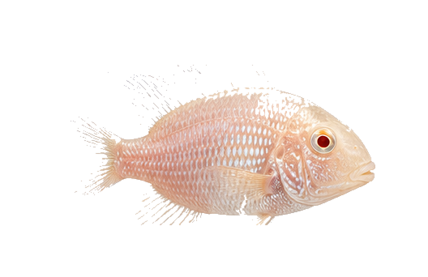
Geophagus surinamensis var. Albino
sp_0270边距 64px
64,64,400,214
主体完整度 0.9999
/species-transparent/batch_015_species_sheet_04_白子红眼关刀_Geophagus_surinamensis.png?v=cutfix4_20260510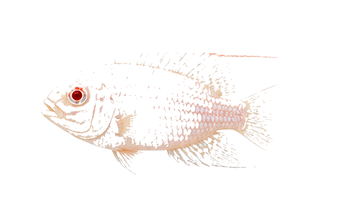
Hemichromis bimaculatus var. Albino
sp_0271边距 66px
66,66,417,218
主体完整度 0.9995
/species-transparent/morph_batch_009_sheet_10_白子红宝石_Hemichromis_bimaculatus_var._Albino.png?v=cutfix4_20260510
Pterophyllum scalare var. Black Longfin
sp_0272边距 86px
86,86,478,301
主体完整度 0.9072
/species-display/sp_0272_长鳍神仙_黑_display_white.png?v=displayfix_20260510
Apistogramma cacatuoides var. Super Red
sp_0273边距 68px
68,68,428,212
主体完整度 0.9999
/species-transparent/batch_015_species_sheet_05_血钻短鲷_Apistogramma_cacatuoides.png?v=cutfix4_20260510
Neocaridina davidi var. Neon Gold
sp_0274边距 68px
68,68,425,186
主体完整度 0.9953
/species-transparent/morph_batch_018_sheet_01_黄金米虾_极品_Neocaridina_davidi_var._Neon_Gold.png?v=cutfix4_20260510
Neocaridina davidi var. Rili
sp_0275边距 65px
65,65,407,174
主体完整度 0.9949
/species-transparent/morph_batch_018_sheet_02_血丝米虾_Neocaridina_davidi_var._Rili.png?v=cutfix4_20260510
Neocaridina davidi var. Deep Blue
sp_0276边距 68px
68,68,425,182
主体完整度 0.9967
/species-transparent/morph_batch_018_sheet_03_蓝钻米虾_Neocaridina_davidi_var._Deep_Blue.png?v=cutfix4_20260510
Caridina cantonensis var. S-Class
sp_0277边距 71px
71,71,449,199
主体完整度 0.9909
/species-transparent/morph_batch_005_sheet_04_红白水晶虾_S级_Caridina_cantonensis_var._S-Class.png?v=cutfix4_20260510
Caridina cantonensis var. Black King Kong
sp_0278边距 72px
72,72,454,174
主体完整度 0.9955
/species-transparent/morph_batch_005_sheet_05_黑金刚水晶虾_Caridina_cantonensis_var._Black_King_Kong.png?v=cutfix4_20260510
Neocaridina davidi var. Blue Gold Back
sp_0279边距 68px
68,68,429,176
主体完整度 0.9976
/species-transparent/morph_batch_018_sheet_04_黄金背蓝丝绒虾_Neocaridina_davidi_var._Blue_Gold_Back.png?v=cutfix4_20260510
Ancistrus sp. Gold Longfin
sp_0280边距 75px
75,75,474,217
主体完整度 0.9980
/species-transparent/morph_batch_001_sheet_09_黄金胡子_长鳍_Ancistrus_sp._Gold_Longfin.png?v=cutfix4_20260510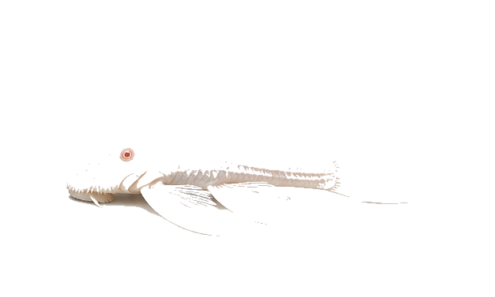
Ancistrus sp. White Longfin
sp_0281边距 76px
76,76,477,225
主体完整度 0.9965
/species-transparent/morph_batch_001_sheet_10_白金胡子_大帆_Ancistrus_sp._White_Longfin.png?v=cutfix4_20260510
Parancistrus aurantiacus var. Gold
sp_0282边距 72px
72,72,452,200
主体完整度 1.0000
/species-transparent/morph_batch_020_sheet_03_黄金达摩_改良_Parancistrus_aurantiacus_var._Gold.png?v=cutfix4_20260510
Scleropages formosus var. Super Red
sp_0283边距 77px
77,77,486,161
主体完整度 1.0000
/species-transparent/morph_batch_025_sheet_06_血红龙_Scleropages_formosus_var._Super_Red.png?v=cutfix4_20260510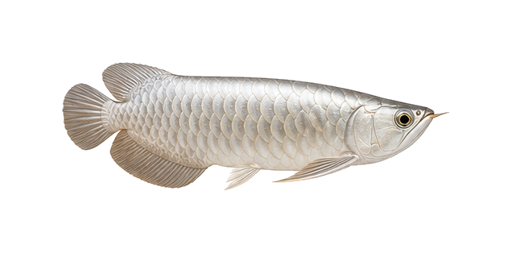
Scleropages formosus var. Silver Platinum
sp_0284边距 77px
77,77,482,160
主体完整度 1.0000
/species-transparent/morph_batch_025_sheet_07_白金龙鱼_Scleropages_formosus_var._Silver_Platinum.png?v=cutfix4_20260510
Channa aurantimaculata var. Gold
sp_0285边距 77px
77,77,483,144
主体完整度 1.0000
/species-transparent/morph_batch_006_sheet_04_黄金眼镜蛇雷龙_改良_Channa_aurantimaculata_var._Gold.png?v=cutfix4_20260510
Channa andrao var. Super Blue
sp_0286边距 74px
74,74,463,164
主体完整度 1.0000
/species-transparent/morph_batch_005_sheet_10_幻彩蓝雷龙_改良_Channa_andrao_var._Super_Blue.png?v=cutfix4_20260510
Hemigrammus bleheri var. Balloon
sp_0287边距 64px
64,64,389,212
主体完整度 0.9890
/species-transparent/morph_batch_010_sheet_07_球形红鼻灯_Hemigrammus_bleheri_var._Balloon.png?v=cutfix4_20260510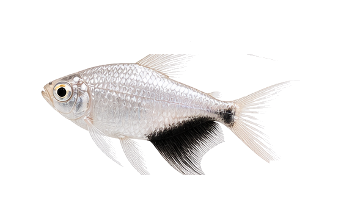
Gymnocorymbus ternetzi var. Platinum Longfin
sp_0288边距 67px
67,67,424,220
主体完整度 0.9881
/species-transparent/morph_batch_009_sheet_02_白金黑裙鱼_长鳍_Gymnocorymbus_ternetzi_var._Platinum_Longfin.png?v=cutfix4_20260510
Danio rerio var. Glo Red
sp_0289边距 73px
73,73,461,171
主体完整度 1.0000
/species-transparent/morph_batch_007_sheet_06_荧光红斑马_Danio_rerio_var._Glo_Red.png?v=cutfix4_20260510
Danio rerio var. Glo Green
sp_0290边距 72px
72,72,453,170
主体完整度 1.0000
/species-transparent/morph_batch_007_sheet_07_荧光绿斑马_Danio_rerio_var._Glo_Green.png?v=cutfix4_20260510
Danio rerio var. Glo Orange
sp_0291边距 74px
74,74,463,175
主体完整度 1.0000
/species-transparent/morph_batch_007_sheet_08_荧光橙斑马_Danio_rerio_var._Glo_Orange.png?v=cutfix4_20260510
Poecilia latipinna var. Gold Balloon
sp_0292边距 64px
64,64,402,206
主体完整度 1.0000
/species-transparent/morph_batch_021_sheet_03_球形金玛丽_Poecilia_latipinna_var._Gold_Balloon.png?v=cutfix4_20260510
Poecilia sphenops var. Black Balloon
sp_0293边距 64px
64,64,404,215
主体完整度 1.0000
/species-transparent/morph_batch_022_sheet_04_球形黑玛丽_Poecilia_sphenops_var._Black_Balloon.png?v=cutfix4_20260510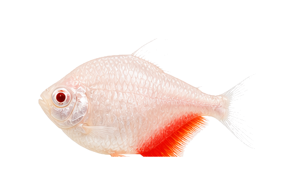
Gymnocorymbus ternetzi var. Albino Balloon
sp_0294边距 64px
64,64,362,198
主体完整度 0.9886
/species-transparent/morph_batch_009_sheet_03_红眼白子红裙_球形_Gymnocorymbus_ternetzi_var._Albino_Balloon.png?v=cutfix4_20260510
Melanotaenia praecox var. Longfin
sp_0295边距 74px
74,74,466,193
主体完整度 0.9993
/species-transparent/batch_015_species_sheet_08_长鳍电光美人_Melanotaenia_praecox.png?v=cutfix4_20260510
Lutjanus kasmira var.
sp_0296边距 68px
68,68,430,191
主体完整度 1.0000
/species-transparent/morph_batch_015_sheet_08_红利鱼_改良_Lutjanus_kasmira_var.png?v=cutfix4_20260510
Pseudochromis sp. Gold
sp_0297边距 64px
64,64,402,101
主体完整度 1.0000
/species-transparent/morph_batch_023_sheet_03_黄金草莓鱼_海水_Pseudochromis_sp._Gold.png?v=cutfix4_20260510Hemianthus callitrichoides
sp_0298边距 71px
71,71,449,191
主体完整度 0.9992
/species-transparent/batch_007_species_sheet_07_迷你矮珍珠_Hemianthus_callitrichoides.png?v=cutfix4_20260510Eleocharis acicularis
sp_0299边距 64px
64,64,340,197
主体完整度 0.9945
/species-transparent/base_missing_003_sheet_04_牛毛毡_Eleocharis_acicularis.png?v=cutfix4_20260510Utricularia graminifolia
sp_0300边距 68px
68,68,430,239
主体完整度 0.9986
/species-transparent/base_missing_006_sheet_10_挖耳草_Utricularia_graminifolia.png?v=cutfix4_20260510
Bucephalandra sp. Blue
sp_0301边距 64px
64,64,321,191
主体完整度 0.9999
/species-transparent/morph_batch_003_sheet_07_辣椒榕_蓝调_Bucephalandra_sp._Blue.png?v=cutfix4_20260510
Anubias barteri var. nana 'Petite'
sp_0302边距 64px
64,64,263,223
主体完整度 1.0000
/species-transparent/morph_batch_002_sheet_06_迷你水榕_Anubias_barteri_var._nana_Petite.png?v=cutfix4_20260510Rotala rotundifolia 'Red'
sp_0303边距 64px
64,64,297,201
主体完整度 1.0000
/species-transparent/morph_batch_024_sheet_03_红宫廷_Rotala_rotundifolia_Red.png?v=cutfix4_20260510Rotala rotundifolia 'Green'
sp_0304边距 64px
64,64,312,223
主体完整度 0.9999
/species-transparent/base_missing_005_sheet_10_宫廷草_Rotala_rotundifolia_Green.png?v=cutfix4_20260510Microsorum pteropus
sp_0305边距 68px
68,68,428,257
主体完整度 0.9999
/species-transparent/base_missing_004_sheet_09_铁皇冠_Microsorum_pteropus.png?v=cutfix4_20260510Bolbitis heudelotii
sp_0306边距 67px
67,67,419,246
主体完整度 1.0000
/species-transparent/morph_batch_011_sheet_10_黑木蕨_Bolbitis_heudelotii.png?v=cutfix4_20260510Vesicularia dubyana
sp_0307边距 64px
64,64,346,215
主体完整度 1.0000
/species-transparent/batch_007_species_sheet_08_莫斯_三角莫斯_Vesicularia_dubyana.png?v=cutfix4_20260510Fissidens fontanus
sp_0308边距 66px
66,66,415,212
主体完整度 0.9999
/species-transparent/base_missing_003_sheet_09_凤尾藓_Fissidens_fontanus.png?v=cutfix4_20260510Cryptocoryne wendtii 'Green'
sp_0309边距 64px
64,64,354,261
主体完整度 0.9999
/species-transparent/base_missing_002_sheet_09_绿温蒂椒草_Cryptocoryne_wendtii_Green.png?v=cutfix4_20260510Echinodorus amazonicus
sp_0310边距 65px
65,65,409,220
主体完整度 1.0000
/species-transparent/base_missing_003_sheet_01_大叶皇冠_Echinodorus_amazonicus.png?v=cutfix4_20260510Limnobium laevigatum
sp_0311边距 64px
64,64,339,217
主体完整度 0.9999
/species-transparent/base_missing_004_sheet_03_圆心萍_Limnobium_laevigatum.png?v=cutfix4_20260510
Nymphaea lotus
sp_0312边距 65px
65,65,408,213
主体完整度 0.9999
/species-transparent/morph_batch_018_sheet_10_红荷根_Nymphaea_lotus.png?v=cutfix4_20260510Egeria densa
sp_0313边距 66px
66,66,418,201
主体完整度 0.9999
/species-transparent/base_missing_003_sheet_03_蜈蚣草_Egeria_densa.png?v=cutfix4_20260510Staurogyne repens
sp_0314边距 69px
69,69,436,216
主体完整度 1.0000
/species-transparent/base_missing_006_sheet_03_南美叉柱花_Staurogyne_repens.png?v=cutfix4_20260510
Ludwigia inclinata var. verticillata
sp_0315边距 64px
64,64,315,214
主体完整度 0.9975
/species-transparent/morph_batch_015_sheet_06_红太阴_Ludwigia_inclinata_var._verticillata.png?v=cutfix4_20260510Myriophyllum aquaticum
sp_0316边距 64px
64,64,339,231
主体完整度 1.0000
/species-transparent/base_missing_005_sheet_01_绿羽毛_Myriophyllum_aquaticum.png?v=cutfix4_20260510Cryptocoryne aponogetifolia
sp_0317边距 64px
64,64,406,254
主体完整度 1.0000
/species-transparent/base_missing_002_sheet_08_大蜻蜓椒草_Cryptocoryne_aponogetifolia.png?v=cutfix4_20260510
Plerogyra sinuosa
sp_0318边距 64px
64,64,322,194
主体完整度 1.0000
/species-transparent/base_missing_005_sheet_07_气泡珊瑚_Plerogyra_sinuosa.png?v=cutfix4_20260510
Euphyllia glabrescens
sp_0319边距 65px
65,65,408,198
主体完整度 0.9596
/species-transparent/base_missing_003_sheet_08_火炬珊瑚_Euphyllia_glabrescens.png?v=cutfix4_20260510
Sarcophyton sp.
sp_0320边距 64px
64,64,392,235
主体完整度 0.9998
/species-transparent/morph_batch_024_sheet_10_皮革珊瑚_Sarcophyton_sp.png?v=cutfix4_20260510
Pachyclavularia violacea
sp_0321边距 64px
64,64,355,207
主体完整度 1.0000
/species-transparent/base_missing_005_sheet_05_草皮珊瑚_Pachyclavularia_violacea.png?v=cutfix4_20260510
Euphyllia divisas
sp_0322边距 64px
64,64,375,271
主体完整度 0.9574
/species-transparent/base_missing_003_sheet_07_蛙卵珊瑚_Euphyllia_divisas.png?v=cutfix4_20260510
Catalaphyllia jardinei
sp_0323边距 64px
64,64,353,225
主体完整度 0.9999
/species-transparent/base_missing_002_sheet_03_尼罗河珊瑚_Catalaphyllia_jardinei.png?v=cutfix4_20260510
Actinodiscus sp.
sp_0324边距 64px
64,64,360,221
主体完整度 1.0000
/species-transparent/morph_batch_011_sheet_01_红菇珊瑚_Actinodiscus_sp.png?v=cutfix4_20260510
Heteractis crispa
sp_0325边距 66px
66,66,414,219
主体完整度 1.0000
/species-transparent/base_missing_004_sheet_01_紫点海葵_Heteractis_crispa.png?v=cutfix4_20260510
Trachyphyllia geoffroyi
sp_0326边距 64px
64,64,351,216
主体完整度 1.0000
/species-transparent/base_missing_006_sheet_07_八字脑珊瑚_Trachyphyllia_geoffroyi.png?v=cutfix4_20260510
Sabellastarte sp.
sp_0327边距 64px
64,64,306,197
主体完整度 0.9913
/species-transparent/morph_batch_024_sheet_05_管虫_五彩_Sabellastarte_sp.png?v=cutfix4_20260510
Fromia milleporella
sp_0328边距 64px
64,64,297,228
主体完整度 0.9999
/species-transparent/batch_016_species_sheet_01_红海星_Fromia_milleporella.png?v=cutfix4_20260510
Acropora sp.
sp_0329边距 64px
64,64,392,226
主体完整度 1.0000
/species-transparent/morph_batch_001_sheet_01_鹿角珊瑚_SPS_Acropora_sp.png?v=cutfix4_20260510
Zoanthus sp.
sp_0330边距 78px
78,78,493,311
主体完整度 0.9998
/species-transparent/morph_batch_029_sheet_03_纽扣珊瑚_动物之森_Zoanthus_sp.png?v=cutfix4_20260510
Tubastraea faulkneri
sp_0331边距 66px
66,66,413,223
主体完整度 1.0000
/species-transparent/base_missing_006_sheet_08_太阳花珊瑚_Tubastraea_faulkneri.png?v=cutfix4_20260510
Palythoa sp.
sp_0332边距 64px
64,64,321,217
主体完整度 1.0000
/species-transparent/batch_016_species_sheet_02_幻彩纽扣_Palythoa.png?v=cutfix4_20260510
Stichodactyla haddoni Blue
sp_0333边距 68px
68,68,430,209
主体完整度 1.0000
/species-transparent/morph_batch_026_sheet_03_蓝地毯海葵_Stichodactyla_haddoni_Blue.png?v=cutfix4_20260510
Stichodactyla gigantea
sp_0334边距 64px
64,64,363,216
主体完整度 1.0000
/species-transparent/batch_016_species_sheet_03_长须地毯_Stichodactyla_gigantea.png?v=cutfix4_20260510
Clavularia sp.
sp_0335边距 64px
64,64,372,209
主体完整度 1.0000
/species-transparent/morph_batch_013_sheet_04_丁香珊瑚_Clavularia_sp.png?v=cutfix4_20260510
Tubastraea coccinea
sp_0336边距 64px
64,64,330,220
主体完整度 1.0000
/species-transparent/batch_016_species_sheet_04_炮仗花_Tubastraea_coccinea.png?v=cutfix4_20260510
Xenia sp.
sp_0337边距 64px
64,64,388,200
主体完整度 0.9997
/species-transparent/morph_batch_028_sheet_08_千手珊瑚_Xenia_sp.png?v=cutfix4_20260510Pelvicachromis pulcher var. Albino
sp_0338边距 67px
67,67,422,193
主体完整度 1.0000
/species-transparent/batch_014_species_sheet_02_白金西非凤凰_Pelvicachromis_pulcher.png?v=cutfix4_20260510
Hemigrammus rodwayi var. Gold
sp_0339边距 64px
64,64,399,202
主体完整度 0.9848
/species-transparent/morph_batch_010_sheet_08_红眼金灯_Hemigrammus_rodwayi_var._Gold.png?v=cutfix4_20260510
Aphyocharax anisitsi var. Balloon
sp_0340边距 64px
64,64,328,203
主体完整度 0.9988
/species-transparent/morph_batch_002_sheet_07_球形红十字灯_Aphyocharax_anisitsi_var._Balloon.png?v=cutfix4_20260510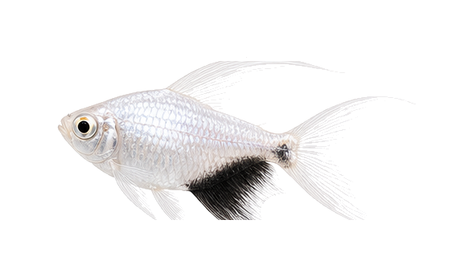
Gymnocorymbus ternetzi var. Longfin White
sp_0341边距 71px
71,71,446,203
主体完整度 0.9573
/species-transparent/morph_batch_009_sheet_04_长鳍白金黑裙_Gymnocorymbus_ternetzi_var._Longfin_White.png?v=cutfix4_20260510
Neocaridina davidi var. Blue Gold
sp_0342边距 69px
69,69,434,176
主体完整度 0.9972
/species-transparent/morph_batch_018_sheet_05_黄金背蓝钻虾_Neocaridina_davidi_var._Blue_Gold.png?v=cutfix4_20260510
Hardscape - Seiryu Stone
sp_0343边距 64px
64,64,386,220
主体完整度 1.0000
/species-transparent/batch_016_species_sheet_05_青龙石_Hardscape_-_Seiryu_Stone.png?v=cutfix4_20260510
Hardscape - Ohko Stone
sp_0344边距 64px
64,64,378,216
主体完整度 1.0000
/species-transparent/batch_016_species_sheet_06_松皮石_Hardscape_-_Ohko_Stone.png?v=cutfix4_20260510
Hardscape - Lava Rock
sp_0345边距 64px
64,64,381,205
主体完整度 1.0000
/species-transparent/batch_016_species_sheet_07_火山石_Hardscape_-_Lava_Rock.png?v=cutfix4_20260510
Hardscape - Driftwood
sp_0346边距 71px
71,71,447,217
主体完整度 1.0000
/species-transparent/batch_016_species_sheet_08_沉木_流木_Hardscape_-_Driftwood.png?v=cutfix4_20260510
Hardscape - Azalea Root
sp_0347边距 66px
66,66,417,230
主体完整度 0.9996
/species-transparent/batch_016_species_sheet_09_杜鹃根_Hardscape_-_Azalea_Root.png?v=cutfix4_20260510
Carassius auratus var. Tigerhead
sp_0348边距 64px
64,64,350,227
主体完整度 0.9934
/species-transparent/morph_batch_004_sheet_07_红白虎头金鱼_Carassius_auratus_var._Tigerhead.png?v=cutfix4_20260510
Carassius auratus var. Calico Ranchu
sp_0349边距 64px
64,64,347,225
主体完整度 1.0000
/species-transparent/morph_batch_004_sheet_08_蓝寿_五花_Carassius_auratus_var._Calico_Ranchu.png?v=cutfix4_20260510
Carassius auratus var. Black Oranda
sp_0350边距 64px
64,64,347,233
主体完整度 1.0000
/species-transparent/morph_batch_004_sheet_09_黑狮头金鱼_Carassius_auratus_var._Black_Oranda.png?v=cutfix4_20260510
Carassius auratus var. Butterfly Tail
sp_0351边距 67px
67,67,422,226
主体完整度 0.9952
/species-transparent/morph_batch_004_sheet_10_红白蝶尾_Carassius_auratus_var._Butterfly_Tail.png?v=cutfix4_20260510
Hardscape - Aqua Soil
sp_0352边距 73px
73,73,461,197
主体完整度 0.9975
/species-transparent/batch_016_species_sheet_10_水草泥_底床_Hardscape_-_Aqua_Soil.png?v=cutfix4_20260510
Hardscape - River Sand
sp_0353边距 73px
73,73,459,187
主体完整度 1.0000
/species-transparent/batch_017_species_sheet_01_溪流砂_Hardscape_-_River_Sand.png?v=cutfix4_20260510
Echinodorus tenellus
sp_0354边距 64px
64,64,394,219
主体完整度 0.9999
/species-transparent/base_missing_003_sheet_02_细叶皇冠_Echinodorus_tenellus.png?v=cutfix4_20260510
Vallisneria nana
sp_0355边距 64px
64,64,389,303
主体完整度 1.0000
/species-transparent/base_missing_007_sheet_02_小水兰_Vallisneria_nana.png?v=cutfix4_20260510
Vallisneria gigantea
sp_0356边距 107px
107,107,670,293
主体完整度 1.0000
/species-transparent/base_missing_007_sheet_01_大水兰_Vallisneria_gigantea.png?v=cutfix4_20260510
Vesicularia sp. Giant
sp_0357边距 71px
71,71,446,200
主体完整度 0.9997
/species-transparent/morph_batch_028_sheet_06_莫斯墙_大三角_Vesicularia_sp._Giant.png?v=cutfix4_20260510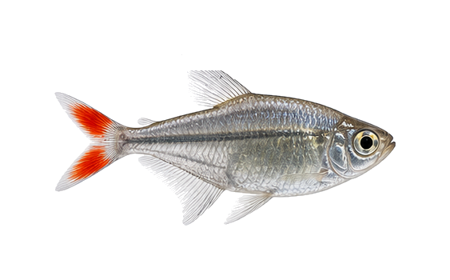
Prionobrama filigera var.
sp_0358边距 68px
68,68,427,214
主体完整度 0.9978
/species-transparent/morph_batch_023_sheet_02_红尾玻璃灯_改良_Prionobrama_filigera_var.png?v=cutfix4_20260510
Boehlkea fredcochui var. Blue
sp_0359边距 72px
72,72,452,146
主体完整度 1.0000
/species-transparent/batch_017_species_sheet_03_红眼蓝钻灯_Boehlkea_fredcochui.png?v=cutfix4_20260510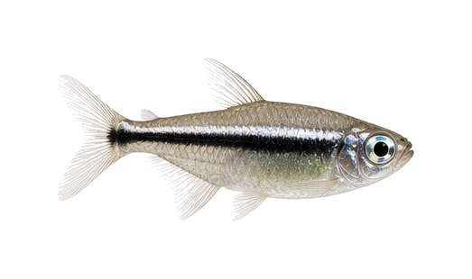
Hyphessobrycon herbertaxelrodi var.
sp_0360边距 64px
64,64,395,182
主体完整度 0.9885
/species-transparent/morph_batch_014_sheet_08_白金黑霓虹灯_Hyphessobrycon_herbertaxelrodi_var.png?v=cutfix4_20260510
Tanichthys albonubes var.
sp_0361边距 71px
71,71,449,210
主体完整度 0.9987
/species-transparent/morph_batch_026_sheet_10_长鳍白云金丝_改良_Tanichthys_albonubes_var.png?v=cutfix4_20260510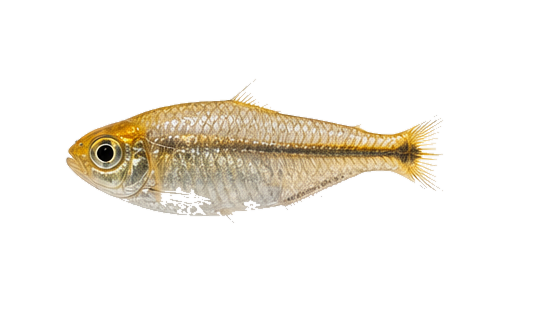
Hemigrammus rodwayi
sp_0362边距 66px
66,66,416,186
主体完整度 0.9837
/species-transparent/morph_batch_010_sheet_09_黄金灯_Hemigrammus_rodwayi.png?v=cutfix4_20260510
Danio rerio var. Glo Purple
sp_0363边距 72px
72,72,455,178
主体完整度 0.9998
/species-transparent/morph_batch_007_sheet_09_荧光紫斑马_Danio_rerio_var._Glo_Purple.png?v=cutfix4_20260510
Danio rerio var. Glo Pink
sp_0364边距 73px
73,73,460,176
主体完整度 0.9982
/species-transparent/morph_batch_007_sheet_10_荧光粉斑马_Danio_rerio_var._Glo_Pink.png?v=cutfix4_20260510
Lutjanus kasmira var.
sp_0365边距 70px
70,70,443,223
主体完整度 0.9995
/species-transparent/morph_batch_015_sheet_09_红利鱼_长鳍型_Lutjanus_kasmira_var.png?v=cutfix4_20260510
Synchiropus splendidus var.
sp_0366边距 65px
65,65,410,216
主体完整度 0.9999
/species-transparent/morph_batch_026_sheet_04_五彩青蛙_改良型_Synchiropus_splendidus_var.png?v=cutfix4_20260510
Zoanthus sp. Snowflake
sp_0367边距 78px
78,78,490,311
主体完整度 0.9614
/species-transparent/morph_batch_029_sheet_04_雪花纽扣珊瑚_Zoanthus_sp._Snowflake.png?v=cutfix4_20260510
Catalaphyllia jardinei var. Green
sp_0368边距 64px
64,64,332,195
主体完整度 1.0000
/species-transparent/morph_batch_005_sheet_08_荧光绿尼罗河珊瑚_Catalaphyllia_jardinei_var._Green.png?v=cutfix4_20260510
Micromussa lordhowensis
sp_0369边距 64px
64,64,353,220
主体完整度 1.0000
/species-transparent/base_missing_004_sheet_08_糖果脑珊瑚_Micromussa_lordhowensis.png?v=cutfix4_20260510
Entacmaea quadricolor var. Red
sp_0370边距 64px
64,64,355,222
主体完整度 1.0000
/species-transparent/morph_batch_008_sheet_03_海葵_红奶嘴_Entacmaea_quadricolor_var._Red.png?v=cutfix4_20260510
Haliclona sp. Blue
sp_0371边距 65px
65,65,412,231
主体完整度 1.0000
/species-transparent/batch_017_species_sheet_05_蓝海绵_Haliclona.png?v=cutfix4_20260510
Andinoacara pulcher var. Balloon
sp_0372边距 64px
64,64,404,201
主体完整度 1.0000
/species-transparent/morph_batch_002_sheet_03_球形蓝宝石鱼_Andinoacara_pulcher_var._Balloon.png?v=cutfix4_20260510
Hemichromis bimaculatus var. Balloon
sp_0373边距 64px
64,64,399,212
主体完整度 1.0000
/species-transparent/morph_batch_010_sheet_01_球形红宝石鱼_Hemichromis_bimaculatus_var._Balloon.png?v=cutfix4_20260510
Astronotus ocellatus var. Balloon
sp_0374边距 64px
64,64,360,216
主体完整度 1.0000
/species-transparent/morph_batch_002_sheet_09_球形地图鱼_Astronotus_ocellatus_var._Balloon.png?v=cutfix4_20260510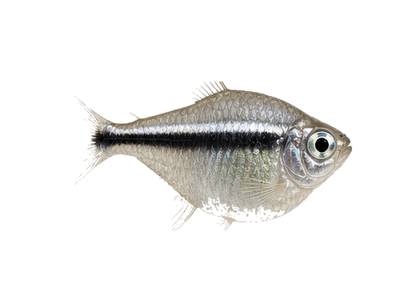
Hyphessobrycon herbertaxelrodi var. Balloon
sp_0375边距 64px
64,64,377,236
主体完整度 0.9943
/species-transparent/morph_batch_014_sheet_09_白金黑霓虹灯_球形_Hyphessobrycon_herbertaxelrodi_var._Balloon.png?v=cutfix4_20260510
Peckoltia compta var. Super Gold
sp_0376边距 70px
70,70,438,189
主体完整度 1.0000
/species-transparent/morph_batch_020_sheet_06_黄金斑马异型_L134改良版_Peckoltia_compta_var._Super_Gold.png?v=cutfix4_20260510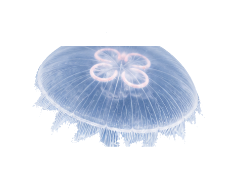
Aurelia aurita
sp_0377边距 64px
64,64,341,226
主体完整度 0.9975
/species-transparent/batch_017_species_sheet_06_海月水母_Aurelia_aurita.png?v=cutfix4_20260510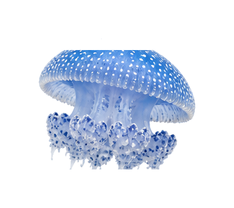
Aurelia coerulea
sp_0378边距 64px
64,64,261,217
主体完整度 1.0000
/species-transparent/batch_017_species_sheet_07_赤月水母_Aurelia_coerulea.png?v=cutfix4_20260510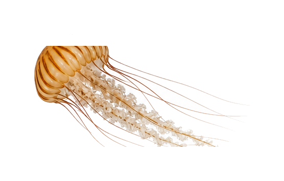
Chrysaora quinquecirrha
sp_0379边距 67px
67,67,422,221
主体完整度 0.9985
/species-transparent/batch_017_species_sheet_08_大西洋海刺水母_Chrysaora_quinquecirrha.png?v=cutfix4_20260510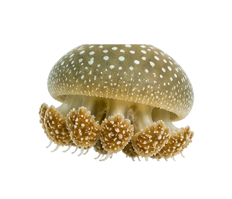
Phyllorhiza punctata
sp_0380边距 64px
64,64,264,209
主体完整度 1.0000
/species-transparent/batch_017_species_sheet_09_澳洲斑点水母_Phyllorhiza_punctata.png?v=cutfix4_20260510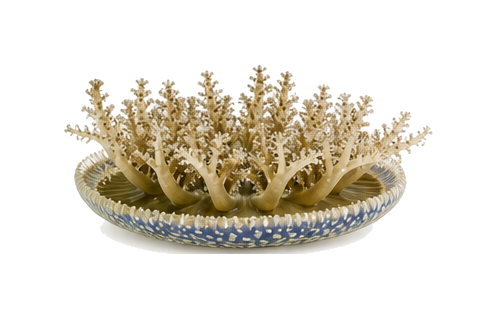
Cassiopea andromeda
sp_0381边距 64px
64,64,369,190
主体完整度 0.9997
/species-transparent/batch_017_species_sheet_10_倒立水母_Cassiopea_andromeda.png?v=cutfix4_20260510Chrysaora melanaster
sp_0382边距 64px
64,64,360,290
主体完整度 0.9973
/species-transparent/batch_018_species_sheet_01_黑星海刺水母_Chrysaora_melanaster.png?v=cutfix4_20260510Cotylorhiza tuberculata
sp_0383边距 64px
64,64,355,280
主体完整度 0.9994
/species-transparent/batch_018_species_sheet_02_蛋黄水母_Cotylorhiza_tuberculata.png?v=cutfix4_20260510Sanderia malayensis
sp_0384边距 64px
64,64,341,281
主体完整度 0.9992
/species-transparent/batch_018_species_sheet_03_天草水母_Sanderia_malayensis.png?v=cutfix4_20260510Carassius auratus var. White Gold
sp_0385边距 64px
64,64,401,225
主体完整度 0.9996
/species-transparent/morph_batch_005_sheet_01_雪白金金鱼_改良_Carassius_auratus_var._White_Gold.png?v=cutfix4_20260510
Carassius auratus var. Black Moor
sp_0386边距 64px
64,64,393,223
主体完整度 1.0000
/species-transparent/morph_batch_005_sheet_02_黑金刚龙睛_Carassius_auratus_var._Black_Moor.png?v=cutfix4_20260510
Carassius auratus var. Panda Butterfly
sp_0387边距 64px
64,64,401,195
主体完整度 1.0000
/species-transparent/morph_batch_005_sheet_03_熊猫蝶尾_极品_Carassius_auratus_var._Panda_Butterfly.png?v=cutfix4_20260510
Pterophyllum scalare var. Super Red
sp_0388边距 77px
77,77,429,301
主体完整度 0.9029
/species-display/sp_0388_血钻神仙_改良_display_white.png?v=displayfix_20260510Betta splendens var. Platinum
sp_0389边距 64px
64,64,382,213
主体完整度 0.9909
/species-transparent/morph_batch_003_sheet_04_白金半月斗鱼_Betta_splendens_var._Platinum.png?v=cutfix4_20260510
Betta splendens var. Kohaku Crown
sp_0390边距 64px
64,64,394,206
主体完整度 0.9996
/species-transparent/morph_batch_003_sheet_05_红白狮头斗鱼_Betta_splendens_var._Kohaku_Crown.png?v=cutfix4_20260510
Betta splendens var. Blue Dragon
sp_0391边距 64px
64,64,391,225
主体完整度 0.9999
/species-transparent/morph_batch_003_sheet_06_蓝龙将军斗鱼_Betta_splendens_var._Blue_Dragon.png?v=cutfix4_20260510
Ancistrus sp. Snowflake Gold
sp_0392边距 75px
75,75,474,218
主体完整度 1.0000
/species-transparent/morph_batch_002_sheet_01_黄金胡子_雪花型_Ancistrus_sp._Snowflake_Gold.png?v=cutfix4_20260510Gymnocorymbus ternetzi var. Platinum Longfin
sp_0393边距 64px
64,64,406,201
主体完整度 0.9677
/species-transparent/morph_batch_009_sheet_05_大帆白金红裙_Gymnocorymbus_ternetzi_var._Platinum_Longfin.png?v=cutfix4_20260510
Gymnocorymbus ternetzi var. Glo Orange
sp_0394边距 70px
70,70,441,203
主体完整度 1.0000
/species-transparent/morph_batch_009_sheet_06_荧光橙经鱼_Gymnocorymbus_ternetzi_var._Glo_Orange.png?v=cutfix4_20260510
Crossocheilus langei var. Gold Longfin
sp_0395边距 75px
75,75,472,212
主体完整度 0.9977
/species-transparent/morph_batch_007_sheet_02_黄金大帆飞狐_Crossocheilus_langei_var._Gold_Longfin.png?v=cutfix4_20260510
Neocaridina davidi var. Blue Pearl
sp_0396边距 68px
68,68,426,170
主体完整度 0.9962
/species-transparent/morph_batch_018_sheet_06_蓝珍珠米虾_Neocaridina_davidi_var._Blue_Pearl.png?v=cutfix4_20260510
Caridina cantonensis var. Flower
sp_0397边距 74px
74,74,464,180
主体完整度 0.9959
/species-transparent/morph_batch_005_sheet_06_红白水晶虾_SSS级_Caridina_cantonensis_var._Flower.png?v=cutfix4_20260510
Caridina cantonensis var. Panda
sp_0398边距 70px
70,70,440,161
主体完整度 0.9976
/species-transparent/morph_batch_005_sheet_07_黑金刚水晶虾_多纹_Caridina_cantonensis_var._Panda.png?v=cutfix4_20260510Chrysiptera cyanea var. Platinum
sp_0399边距 64px
64,64,345,186
主体完整度 0.9975
/species-transparent/morph_batch_006_sheet_06_白金蓝魔鬼_海水_Chrysiptera_cyanea_var._Platinum.png?v=cutfix4_20260510
Catalaphyllia jardinei var. Ultra Green
sp_0400边距 64px
64,64,325,219
主体完整度 1.0000
/species-transparent/morph_batch_005_sheet_09_荧光绿尼罗河珊瑚_改良_Catalaphyllia_jardinei_var._Ultra_Green.png?v=cutfix4_20260510
Entacmaea quadricolor var. Rose
sp_0401边距 64px
64,64,365,225
主体完整度 1.0000
/species-transparent/morph_batch_008_sheet_04_红奶嘴海葵_分裂种_Entacmaea_quadricolor_var._Rose.png?v=cutfix4_20260510
Stichodactyla gigantea var. Green
sp_0402边距 68px
68,68,426,213
主体完整度 1.0000
/species-transparent/morph_batch_026_sheet_02_绿地毯海葵_长须_Stichodactyla_gigantea_var._Green.png?v=cutfix4_20260510
Zoanthus sp. Gold Center
sp_0403边距 81px
81,81,512,315
主体完整度 1.0000
/species-transparent/morph_batch_029_sheet_05_黄金纽扣珊瑚_大规格_Zoanthus_sp._Gold_Center.png?v=cutfix4_20260510
Trachyphyllia geoffroyi var. Purple
sp_0404边距 64px
64,64,372,187
主体完整度 1.0000
/species-transparent/morph_batch_027_sheet_03_紫晶八字脑珊瑚_Trachyphyllia_geoffroyi_var._Purple.png?v=cutfix4_20260510
Tubastraea coccinea var. Red
sp_0405边距 64px
64,64,354,192
主体完整度 1.0000
/species-transparent/morph_batch_028_sheet_03_红炮仗花珊瑚_Tubastraea_coccinea_var._Red.png?v=cutfix4_20260510
Synchiropus splendidus var. XL
sp_0406边距 69px
69,69,432,215
主体完整度 1.0000
/species-transparent/morph_batch_026_sheet_05_五彩青蛙_大规格改良_Synchiropus_splendidus_var._XL.png?v=cutfix4_20260510
Scleropages formosus var. Blood Red A
sp_0407边距 78px
78,78,488,158
主体完整度 1.0000
/species-transparent/morph_batch_025_sheet_08_血红龙_A级_Scleropages_formosus_var._Blood_Red_A.png?v=cutfix4_20260510
Scleropages formosus var. Gold Head
sp_0408边距 77px
77,77,482,153
主体完整度 1.0000
/species-transparent/morph_batch_025_sheet_09_金头过背金龙_Scleropages_formosus_var._Gold_Head.png?v=cutfix4_20260510Potamotrygon leopoldi var. Albino
sp_0409边距 65px
65,65,408,288
主体完整度 0.9997
/species-transparent/batch_018_species_sheet_04_白子黑白魟_Potamotrygon_leopoldi.png?v=cutfix4_20260510
Potamotrygon leopoldi var. Eclipse
sp_0410边距 69px
69,69,432,226
主体完整度 1.0000
/species-transparent/morph_batch_023_sheet_01_皇冠黑白魟_点位改良_Potamotrygon_leopoldi_var._Eclipse.png?v=cutfix4_20260510
Channa stewartii var. Karbi Anglong
sp_0411边距 75px
75,75,472,146
主体完整度 1.0000
/species-transparent/morph_batch_006_sheet_05_蓝宝石雷龙_特级选育_Channa_stewartii_var._Karbi_Anglong.png?v=cutfix4_20260510
Channa andrao var. Red
sp_0412边距 75px
75,75,471,158
主体完整度 1.0000
/species-transparent/morph_batch_006_sheet_01_幻彩红雷龙_改良_Channa_andrao_var._Red.png?v=cutfix4_20260510
Pangio kuhlii var. Longfin
sp_0413边距 76px
76,76,481,167
主体完整度 0.9993
/species-transparent/morph_batch_019_sheet_08_黄金眼镜蛇蛇鱼_长鳍_Pangio_kuhlii_var._Longfin.png?v=cutfix4_20260510Geophagus sp. var. Longfin Platinum
sp_0414边距 70px
70,70,441,213
主体完整度 0.9716
/species-transparent/morph_batch_008_sheet_05_白金黑帝魔_长鳍_Geophagus_sp._var._Longfin_Platinum.png?v=cutfix4_20260510Xiphophorus hellerii var. High Fin
sp_0415边距 112px
112,112,701,252
主体完整度 0.9992
/species-transparent/morph_batch_029_sheet_02_红眼白子红剑_高鳍_Xiphophorus_hellerii_var._High_Fin.png?v=cutfix4_20260510
Andinoacara pulcher var. Super Balloon
sp_0416边距 64px
64,64,405,202
主体完整度 1.0000
/species-transparent/morph_batch_002_sheet_04_球形蓝宝石鱼_特级_Andinoacara_pulcher_var._Super_Balloon.png?v=cutfix4_20260510
Mikrogeophagus ramirezi var. Super Red Balloon
sp_0417边距 64px
64,64,343,213
主体完整度 1.0000
/species-transparent/morph_batch_016_sheet_09_血钻波子_球形_Mikrogeophagus_ramirezi_var._Super_Red_Balloon.png?v=cutfix4_20260510Ancistrus sp. Albino Longfin
sp_0418边距 76px
76,76,477,221
主体完整度 0.9928
/species-transparent/morph_batch_002_sheet_02_黄金大帆胡子_红眼_Ancistrus_sp._Albino_Longfin.png?v=cutfix4_20260510
Danio rerio var. Glo Orange Longfin
sp_0419边距 73px
73,73,462,206
主体完整度 0.9984
/species-transparent/morph_batch_008_sheet_01_荧光橙斑马_长鳍_Danio_rerio_var._Glo_Orange_Longfin.png?v=cutfix4_20260510
Trichopodus trichopterus var. Balloon Gold XL
sp_0420边距 64px
64,64,401,220
主体完整度 1.0000
/species-transparent/morph_batch_028_sheet_02_球形金曼龙_大规格_Trichopodus_trichopterus_var._Balloon_Gold_XL.png?v=cutfix4_20260510Gymnocorymbus ternetzi var. Platinum Balloon Longfin
sp_0421边距 64px
64,64,394,202
主体完整度 0.9790
/species-transparent/morph_batch_009_sheet_07_白金黑裙_球形长鳍_Gymnocorymbus_ternetzi_var._Platinum_Balloon_Longfin.png?v=cutfix4_20260510
Hardscape - Lava Plate
sp_0422边距 75px
75,75,472,195
主体完整度 1.0000
/species-transparent/batch_018_species_sheet_05_火山石景观板_Hardscape_-_Lava_Plate.png?v=cutfix4_20260510
Hardscape - Iwagumi Set
sp_0423边距 71px
71,71,449,294
主体完整度 1.0000
/species-transparent/batch_018_species_sheet_06_青龙石景观组_Hardscape_-_Iwagumi_Set.png?v=cutfix4_20260510
Hardscape - Bonsai Wood
sp_0424边距 70px
70,70,440,295
主体完整度 0.9995
/species-transparent/batch_018_species_sheet_07_南美沉木景观树_Hardscape_-_Bonsai_Wood.png?v=cutfix4_20260510
Hardscape - Cosmetic Sand
sp_0425边距 70px
70,70,440,283
主体完整度 0.9902
/species-transparent/batch_018_species_sheet_08_ADA风格化妆砂_Hardscape_-_Cosmetic_Sand.png?v=cutfix4_20260510
Tanichthys albonubes var. Polar
sp_0426边距 71px
71,71,448,183
主体完整度 0.9914
/species-transparent/morph_batch_027_sheet_01_极地白云金丝_Tanichthys_albonubes_var._Polar.png?v=cutfix4_20260510
Caridina multidentata
sp_0427边距 72px
72,72,453,192
主体完整度 0.9805
/species-transparent/base_missing_002_sheet_02_大和藻虾_Caridina_multidentata.png?v=cutfix4_20260510
Neritina natalensis
sp_0428边距 64px
64,64,260,197
主体完整度 1.0000
/species-transparent/base_missing_005_sheet_03_斑马螺_Neritina_natalensis.png?v=cutfix4_20260510
Pomacea bridgesii
sp_0429边距 64px
64,64,322,222
主体完整度 0.9999
/species-transparent/base_missing_005_sheet_09_神秘螺_Pomacea_bridgesii.png?v=cutfix4_20260510
Anentome helena
sp_0430边距 64px
64,64,393,169
主体完整度 1.0000
/species-transparent/base_missing_001_sheet_04_杀手螺_Anentome_helena.png?v=cutfix4_20260510
Paracheirodon innesi
sp_0431边距 64px
64,64,394,174
主体完整度 0.9965
/species-transparent/batch_001_species_sheet_01_红绿灯_Paracheirodon_innesi.png?v=cutfix4_20260510
Paracheirodon axelrodi
sp_0432边距 66px
66,66,414,205
主体完整度 0.9998
/species-transparent/batch_001_species_sheet_02_宝莲灯_Paracheirodon_axelrodi.png?v=cutfix4_20260510
Hemigrammus rhodostomus
sp_0433边距 68px
68,68,428,181
主体完整度 0.9942
/species-transparent/batch_001_species_sheet_03_红鼻剪刀_Hemigrammus_rhodostomus.png?v=cutfix4_20260510
Tanichthys albonubes
sp_0434边距 73px
73,73,458,184
主体完整度 0.9998
/species-transparent/batch_001_species_sheet_04_白云金丝_Tanichthys_albonubes.png?v=cutfix4_20260510
Danio rerio
sp_0435边距 70px
70,70,440,146
主体完整度 0.9999
/species-transparent/batch_001_species_sheet_05_斑马鱼_Danio_rerio.png?v=cutfix4_20260510
Poecilia reticulata
sp_0436边距 64px
64,64,392,222
主体完整度 0.9995
/species-transparent/batch_001_species_sheet_06_孔雀鱼_Poecilia_reticulata.png?v=cutfix4_20260510
Poecilia sphenops
sp_0437边距 66px
66,66,416,187
主体完整度 0.9895
/species-transparent/batch_001_species_sheet_07_玛丽鱼_Poecilia_sphenops.png?v=cutfix4_20260510
Xiphophorus hellerii
sp_0438边距 75px
75,75,469,180
主体完整度 0.9999
/species-transparent/batch_001_species_sheet_08_红剑鱼_Xiphophorus_hellerii.png?v=cutfix4_20260510
Puntigrus tetrazona
sp_0439边距 64px
64,64,334,220
主体完整度 1.0000
/species-transparent/batch_002_species_sheet_03_虎皮鱼_Puntigrus_tetrazona.png?v=cutfix4_20260510
Sahyadria denisonii
sp_0440边距 65px
65,65,407,168
主体完整度 1.0000
/species-transparent/batch_002_species_sheet_04_一眉道人_Sahyadria_denisonii.png?v=cutfix4_20260510
Gyrinocheilus aymonieri
sp_0441边距 66px
66,66,413,165
主体完整度 1.0000
/species-transparent/batch_002_species_sheet_06_金苔鼠_Gyrinocheilus_aymonieri.png?v=cutfix4_20260510
Gyrinocheilus aymonieri var.
sp_0442边距 72px
72,72,455,149
主体完整度 0.9999
/species-transparent/morph_batch_009_sheet_08_青苔鼠_Gyrinocheilus_aymonieri_var.png?v=cutfix4_20260510
Corydoras pandas
sp_0443边距 64px
64,64,375,194
主体完整度 0.9941
/species-transparent/batch_001_species_sheet_09_熊猫鼠_Corydoras_panda.png?v=cutfix4_20260510
Trichopodus leerii
sp_0444边距 64px
64,64,377,220
主体完整度 0.9969
/species-transparent/batch_002_species_sheet_09_珍珠马甲_Trichopodus_leerii.png?v=cutfix4_20260510
Trichopodus trichopterus var.
sp_0445边距 64px
64,64,373,232
主体完整度 0.9969
/species-transparent/batch_002_species_sheet_10_蓝曼龙_Trichopodus_trichopterus.png?v=cutfix4_20260510
Pterophyllum scalare
sp_0446边距 75px
75,75,420,297
主体完整度 0.9998
/species-display/sp_0446_神仙鱼_display_white.png?v=displayfix_20260510Symphysodon aequifasciatus
sp_0447边距 64px
64,64,296,233
主体完整度 1.0000
/species-transparent/batch_003_species_sheet_02_七彩神仙_Symphysodon_aequifasciatus.png?v=cutfix4_20260510
Mikrogeophagus ramirezi
sp_0448边距 64px
64,64,373,218
主体完整度 1.0000
/species-transparent/batch_003_species_sheet_03_荷兰凤凰_Mikrogeophagus_ramirezi.png?v=cutfix4_20260510
Labidochromis caeruleus
sp_0449边距 64px
64,64,375,207
主体完整度 1.0000
/species-transparent/batch_003_species_sheet_06_非洲王子_Labidochromis_caeruleus.png?v=cutfix4_20260510
Andinoacara pulcher
sp_0450边距 64px
64,64,391,218
主体完整度 1.0000
/species-transparent/batch_003_species_sheet_10_蓝宝石鱼_Andinoacara_pulcher.png?v=cutfix4_20260510
Astronotus ocellatus
sp_0451边距 68px
68,68,425,219
主体完整度 1.0000
/species-transparent/batch_004_species_sheet_01_地图鱼_Astronotus_ocellatus.png?v=cutfix4_20260510Amphiprion ocellaris
sp_0452边距 64px
64,64,365,203
主体完整度 0.9982
/species-transparent/batch_004_species_sheet_03_公子小丑_Amphiprion_ocellaris.png?v=cutfix4_20260510
Pterois volitans
sp_0453边距 64px
64,64,383,228
主体完整度 0.9298
/species-transparent/batch_004_species_sheet_07_长鼻狮子鱼_Pterois_volitans.png?v=cutfix4_20260510Caridina multidentata
sp_0454边距 72px
72,72,453,192
主体完整度 0.9805
/species-transparent/base_missing_002_sheet_02_大和藻虾_Caridina_multidentata.png?v=cutfix4_20260510Neritina natalensis
sp_0455边距 64px
64,64,260,197
主体完整度 1.0000
/species-transparent/base_missing_005_sheet_03_斑马螺_Neritina_natalensis.png?v=cutfix4_20260510Pomacea bridgesii
sp_0456边距 64px
64,64,322,222
主体完整度 0.9999
/species-transparent/base_missing_005_sheet_09_神秘螺_Pomacea_bridgesii.png?v=cutfix4_20260510Anentome helena
sp_0457边距 64px
64,64,393,169
主体完整度 1.0000
/species-transparent/base_missing_001_sheet_04_杀手螺_Anentome_helena.png?v=cutfix4_20260510Kryptopterus vitreolus
sp_0458边距 73px
73,73,461,140
主体完整度 0.9714
/species-transparent/batch_011_species_sheet_04_玻璃猫鱼_Kryptopterus_vitreolus.png?v=cutfix4_20260510Neocaridina davidi wild type
sp_0459边距 73px
73,73,461,179
主体完整度 0.9959
黑壳虾为本地补录物种；当前暂用黑色米虾素材占位，最终应替换为半透明黑褐色野生型 Neocaridina davidi 图片。
/species-transparent/morph_batch_017_sheet_06_黑金刚米虾_Neocaridina_davidi_var._Black.png?v=cutfix4_20260510